<!doctype html>
<html lang="en">
<head>
  <meta charset="utf-8">
  <meta name="viewport" content="width=device-width, initial-scale=1">
  <title>arxiv digest — 2026-10-23</title>
  <style>
:root {
  --bg: #ffffff;
  --fg: #1f2328;
  --muted: #59636e;
  --border: #d0d7de;
  --card: #f6f8fa;
  --link: #0969da;
}
body {
  max-width: 980px;
  margin: 0 auto;
  padding: 2rem 1rem 5rem;
  font-family: -apple-system, BlinkMacSystemFont, "Segoe UI", Helvetica, Arial, sans-serif;
  line-height: 1.55;
  color: var(--fg);
  background: var(--bg);
}
a { color: var(--link); }
img { max-width: 100%; height: auto; }
pre, code { background: var(--card); border-radius: 6px; }
pre { padding: 1rem; overflow-x: auto; }
blockquote { border-left: 4px solid var(--border); padding-left: 1rem; color: var(--muted); }
details { margin: 0.6rem 0; }
summary { cursor: pointer; font-weight: 600; }
.paper-figures-scroll {
  display: flex;
  gap: 1rem;
  overflow-x: auto;
  overscroll-behavior-x: contain;
  padding: 0.75rem 0.25rem 1rem;
  margin: 1rem 0 1.25rem;
  border-top: 1px solid var(--border);
  border-bottom: 1px solid var(--border);
  scroll-snap-type: x proximity;
}
.paper-figure-card {
  flex: 0 0 min(260px, 72vw);
  scroll-snap-align: start;
  background: var(--card);
  border: 1px solid var(--border);
  border-radius: 12px;
  padding: 0.55rem;
}
.paper-figure-card img {
  display: block;
  width: 100%;
  max-height: 240px;
  object-fit: contain;
  background: white;
  border-radius: 8px;
}
.paper-figure-caption {
  display: block;
  margin-top: 0.5rem;
  color: var(--muted);
  font-size: 0.85rem;
}
.figure-strip-hint {
  color: var(--muted);
  font-size: 0.9rem;
  margin-bottom: -0.3rem;
}
</style>
  <script>
    window.MathJax = {
      tex: {
        inlineMath: [['$', '$'], ['\\(', '\\)']],
        displayMath: [['$$', '$$'], ['\\[', '\\]']],
        processEscapes: true,
        processEnvironments: true
      },
      options: {
        skipHtmlTags: ['script', 'noscript', 'style', 'textarea', 'pre', 'code'],
        ignoreHtmlClass: 'tex2jax_ignore',
        processHtmlClass: 'tex2jax_process'
      }
    };
  </script>
  <script id="MathJax-script" async
    src="https://cdn.jsdelivr.net/npm/mathjax@3/es5/tex-chtml.js"></script>
</head>
<body>
<header style="background-color: #333; color: white; padding: 15px; margin-bottom: 20px;">
  <h1 style="margin: 0; font-size: 24px;">
    <a href="https://ochelpan.github.io/arXiv_clean/" style="color: white; text-decoration: none;">Main</a>
  </h1>
</header>

<h1>Daily arXiv Report</h1>

<hr>
<p>
<a href="index.html">← Index</a>
 · <a href="papers_03.html">← Previous</a> · <a href="papers_05.html">Next →</a>
</p>
<hr>

<h2>Papers 61–80</h2>
<p><a id="paper-2610.30094"></a></p>
<h3 id="stockmayer-fluid-with-a-shifted-dipole-iii-ion-solvation"><a href="http://arxiv.org/abs/2610.30094v1">Stockmayer Fluid with a Shifted Dipole. III. Ion Solvation</a></h3>
<p><strong>Authors:</strong> Ananya Venkatachalam, Pierre J. Walker, Samuel Varner, Bilin Zhuang, Zhen-Gang Wang<br>
<strong>Type:</strong> theory · <strong>Category:</strong> statistical mechanics · <strong>PDF:</strong> <a href="https://arxiv.org/pdf/2610.30094v1">https://arxiv.org/pdf/2610.30094v1</a><br>
<strong>Analysis basis:</strong> full PDF text, analyzed in chunks
<strong>Topic relevance:</strong> <code>Keldysh / 2PI / non-Gaussian methods</code> <strong>2/5</strong></p>
<div class="figure-strip-hint">↔ Scroll figures horizontally</div>
<div class="paper-figures-scroll">
<figure class="paper-figure-card">
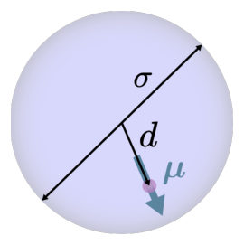
<figcaption class="paper-figure-caption"><b>Fig 1.</b> FIG. 1. Model of a shifted-dipole Stockmayer fluid (sd-SF). Com- pared to the regular Stockmayer fluid, the particle has a dipole µ shifted from the center by a distance d in the direction of the dipole (depicted as the blue arrow). The excluded-volume interaction be- tween the particles is described by a regular Lennard-Jones potential with characteristic length scale σ, and the electrostatic interaction is the dipole-dipole interaction between the shifted dipoles. Figure adapted and caption reproduced from Walker et al.29.</figcaption>
</figure>
<figure class="paper-figure-card">
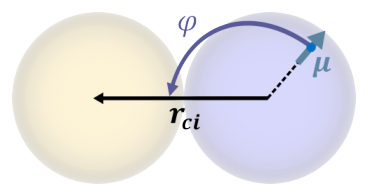
<figcaption class="paper-figure-caption"><b>Fig 2.</b> FIG. 2. Schematic illustration of angular descriptors for the specific particle pair. The angles ϕ1 and ϕ2 denote the orientation of each dipole moment µ1 and µ2 relative to the dipole-displacement vector rd, while γ12 is the torsional angle between the two dipoles. The scalar center-to-center distance is r, and d represents the shift of each dipole from the particle center.</figcaption>
</figure>
<figure class="paper-figure-card">
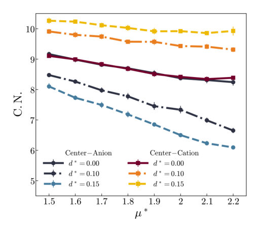
<figcaption class="paper-figure-caption"><b>Fig 3.</b> FIG. 4. Coordination numbers of solvent particles around anions and cations as functions of dipole strength, obtained by integrating the corresponding radial distribution functions over the first solvation shell up to the mean first-shell cutoff rcut. Error bars represent 95% confidence intervals obtained by resampling block-averaged coordi- nation numbers.</figcaption>
</figure>
<figure class="paper-figure-card">
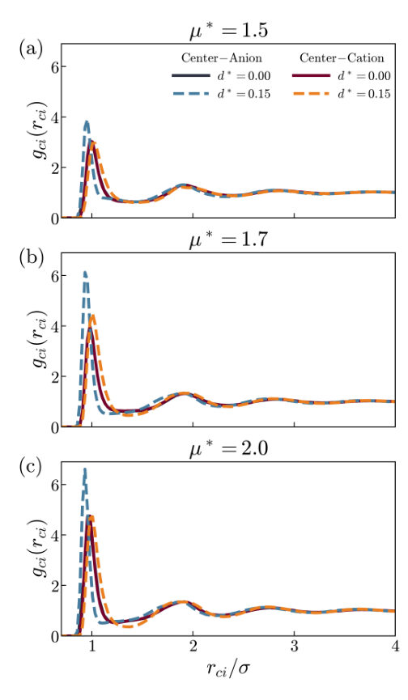
<figcaption class="paper-figure-caption"><b>Fig 4.</b> FIG. 3. Solvent center–ion radial distribution functions for anions and cations at µ∗= 1.0, 1.5, and 2.0. Solid curves correspond to d∗= 0.00, while dashed curves correspond to d∗= 0.15.</figcaption>
</figure>
<figure class="paper-figure-card">
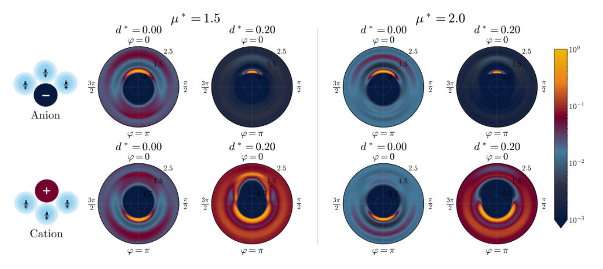
<figcaption class="paper-figure-caption"><b>Fig 5.</b> FIG. 5. Circular representation of the ion–solvent angular-radial distribution functions. Radius denotes the ion–solvent-center separation rci/σ up to 2.5, and ϕ denotes the angle between the solvent dipole and the displacement vector from the solvent center to the ion (Fig. 2). Color denotes the logarithmically scaled, normalized probability density, so brighter regions correspond to more probable ion–solvent configurations. The schematics on the left illustrate the information contained in the ARDFs, depicting the preferred solvent orientation and the regions around a given ion where solvent particles are most likely to be found.</figcaption>
</figure>
</div>

<p><strong>Summary.</strong> This work uses molecular dynamics and mean-field theory to study how shifting the dipole moment in a solvent fluid alters ion solvation. The key finding is that this geometric shift breaks symmetry, making anion solvation more favorable than cation solvation. This confirms that the precise location of molecular charges, rather than just their magnitude, dictates ion-specific interactions in polar media.</p>
<p><strong>Why it may be interesting.</strong> The detailed analysis of how a simple geometric modification (dipole shift) leads to profound, directional asymmetries in solvation free energy and ion pairing is highly relevant for understanding local field effects in polar media, which underpins many quantum many-body simulations.</p>
<details>
<summary>Detailed structure</summary>
<p><strong>Main problem.</strong> The study investigates how displacing the dipole moment of a solvent particle in a Stockmayer fluid affects ion-solvent structuring and the thermodynamics of ion solvation.</p>
<p><strong>Main result.</strong> Dipole shifting breaks the symmetry, leading to anion solvation becoming more favorable and cation solvation less favorable, demonstrating that molecular charge geometry, not just bulk dielectric screening, governs ion-specific interactions.</p>
<p><strong>Method.</strong> The research employs molecular dynamics simulations and mean-field theoretical approaches (like Hubbard-Stratonovich transformations) to calculate structural and thermodynamic properties.</p>
<p><strong>Model / system.</strong> The system is a Stockmayer fluid solvent model where the dipole is geometrically shifted from the center of the Lennard-Jones particle. Ions are treated as point charges (cations and anions) interacting with this solvent.</p>
<p><strong>Key observables.</strong> Radial and angular distribution functions, solvation free energies ($\Delta F$), and the potential of mean force (PMF) for ion-ion interactions.</p>
<p><strong>Important parameters / regimes.</strong> Dipole magnitude ($\mu$), dipole displacement ($d$), and the comparison between centered ($d=0$) and shifted ($d>0$) dipoles.</p>
<p><strong>Assumptions / limitations.</strong> The analysis assumes that the effects observed cannot be explained by bulk dielectric screening alone, emphasizing the role of local molecular geometry.</p>
<p><strong>Figures summary.</strong> Figures illustrate the model setup, the radial polarization and running screened charge around neutral cavities and charged ions for both shifted and unshifted dipoles, and the resulting solvation free energies.</p>
<p><strong>Paper structure.</strong> The paper progresses from defining the physical system and simulation methods (MD/Mean-Field) to calculating structural descriptors (RDF, ARDF) and finally determining the thermodynamic consequences (solvation free energy, ion-ion interaction changes) based on the dipole shift.</p>
</details>
<details>
<summary>Abstract</summary>
<p>Though ion solvation is well understood for the standard Stockmayer fluid, the effect of displacing the point dipole of a Stockmayer particle, a simple geometric modification, on ion-solvent structuring and solvation thermodynamics remains less understood. We use molecular dynamics simulations to describe how a dipole shift affects radial and orientational solvent structure around centered ions, how strongly the solvent distinguishes cations and anions, and how the solvent mediates ion-ion pairing. We show that, with a centered dipole, cations and anions have equal preferences for the local solvent environment. Shifting the dipole breaks the fore-aft symmetry of the local electrostatic field, leading to a stronger preference for a Stockmayer particle's dipole to orient towards an anion and a weaker preference to orient away from a cation. These structural asymmetries propagate to the solvation free energies: increasing dipole displacement makes anion solvation more favorable, while cation solvation becomes less favorable overall across dipole strengths. The same asymmetry also manifests in the effective ion-ion interaction-increasing the dipole shift reorganizes the local solvation environment, enhancing solvent shielding of short-range cation-anion contact while weakening screening at longer range. As a result, solvent-separated configurations become comparatively more favorable, whereas increasing dipole strength produces the opposite trend. Such effects cannot be explained by bulk dielectric screening alone, indicating that molecular charge geometry plays an important role in both single-ion solvation and solvent-mediated ion-ion interactions. This work demonstrates that dipole location, not only magnitude, provides a geometric control on ion-specific solvation and ion pairing in general polar fluids.</p>
</details>
<p><sub><a href="#top">↑ back to top</a></sub></p>

<p><a id="paper-2610.28786"></a></p>
<h3 id="theory-of-the-intrinsic-optical-anomalous-hall-responses-in-time-reversal-symmetry-breaking-superconductors"><a href="http://arxiv.org/abs/2610.28786v1">Theory of the intrinsic optical anomalous Hall responses in time-reversal symmetry breaking superconductors</a></h3>
<p><strong>Authors:</strong> Jia-Long Zhang, Wen Huang<br>
<strong>Type:</strong> theory · <strong>Category:</strong> other · <strong>PDF:</strong> <a href="https://arxiv.org/pdf/2610.28786v1">https://arxiv.org/pdf/2610.28786v1</a><br>
<strong>Analysis basis:</strong> full PDF text, analyzed in chunks
<strong>Topic relevance:</strong> <code>Keldysh / 2PI / non-Gaussian methods</code> <strong>2/5</strong></p>
<div class="figure-strip-hint">↔ Scroll figures horizontally</div>
<div class="paper-figures-scroll">
<figure class="paper-figure-card">
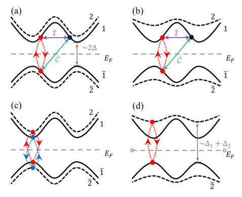
<figcaption class="paper-figure-caption"><b>Fig 1.</b> FIG. 2. Graphic representation of the virtual optical transi- tions between low-energy Bogoliubov quasiparticles for ana- lyzing the low-frequency optical Hall responses. The left panel [(a) and (c)] is for unitary pairing states, where the degenerate Bogoliubov bands are represented by slightly displaced solid and dashed curves. The right panel [(b) and (d)] is for nonuni- tary states. The Bogoliubov bands related by the particle-hole symmetry are labeled by i and ¯i, with i = 1, 2. The green and purple double arrows in (a) and (b) connect the pair of quasiparticle states related by particle-hole ( ˆC) and inversion (ˆI) symmetries, respectively. The red and blue dotted curves with arrows...</figcaption>
</figure>
<figure class="paper-figure-card">
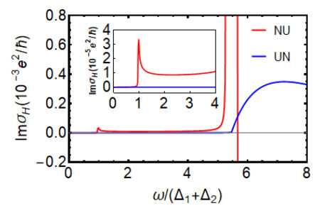
<figcaption class="paper-figure-caption"><b>Fig 2.</b> FIG. 3. Frequency dependence of the imaginary part of the Hall conductivity as a function of ω/(∆1 + ∆2). Details of the model calculation are given in App. E. The red and blue curves correspond to the nonunitary (NU) and unitary (UN) superconducting states, respectively. The inset shows an en- larged view of the low-frequency regime of the Hall conduc- tivity. A resonance peak emerges near ω ≈∆1 + ∆2 in the nonunitary state, where ∆1 and ∆2 denote the gap size of the Bogoliubov bands as defined in App. E.</figcaption>
</figure>
</div>

<p><strong>Summary.</strong> This theoretical work establishes quantum geometry as the unifying principle governing the intrinsic optical anomalous Hall response in superconductors with broken time-reversal symmetry. By analyzing microscopic tunneling processes, the authors rigorously distinguish the physical requirements for generating this Hall effect in unitary versus nonunitary superconducting states. This provides a crucial guide for experimentalists seeking to identify the pairing symmetry in novel superconducting materials.</p>
<p><strong>Why it may be interesting.</strong> The work connects topological properties (Berry curvature, quantum geometry) to measurable transport phenomena (Hall effect) in unconventional superconductors, providing a powerful diagnostic tool for classifying exotic pairing symmetries.</p>
<details>
<summary>Detailed structure</summary>
<p><strong>Main problem.</strong> The paper aims to develop a unified theory for the intrinsic optical anomalous Hall response in superconductors that exhibit time-reversal symmetry breaking (TRSB). It seeks to elucidate the microscopic ingredients and organizing principle behind this Hall response.</p>
<p><strong>Main result.</strong> The intrinsic Hall response is established as a fundamentally quantum-geometric phenomenon, with interband pairing being a prerequisite for unitary TRSB states but not for nonunitary ones. A key symmetry rule distinguishes between unitary and nonunitary states regarding low-frequency resonances.</p>
<p><strong>Method.</strong> The authors employ linear response theory, diagrammatic methods (analyzing single-electron and Cooper-pair tunneling processes), and develop an effective electron theory by integrating out hole degrees of freedom.</p>
<p><strong>Model / system.</strong> The study focuses on TRSB multiband superconductors possessing inversion symmetry, analyzed using the Bogoliubov-de Gennes (BdG) Hamiltonian in the band-basis representation.</p>
<p><strong>Key observables.</strong> Optical anomalous Hall conductivity ($\sigma_H(
u)$), which is probed by experiments like the polar Kerr effect.</p>
<p><strong>Important parameters / regimes.</strong> Time-reversal symmetry breaking (TRSB), superconducting gap ($\Delta$), and the presence/absence of spin-orbit coupling (SOC).</p>
<p><strong>Assumptions / limitations.</strong> The analysis relies on the band-basis representation and assumes the superconducting state possesses inversion symmetry.</p>
<p><strong>Figures summary.</strong> Figures illustrate diagrammatic representations of the Hall conductivity calculation (Class A and B diagrams) and show the Bogoliubov band structure, highlighting the predicted low-frequency optical Hall resonance.</p>
<p><strong>Paper structure.</strong> The paper progresses from establishing the formalism using linear response theory, through diagrammatic analysis of microscopic processes (single-electron vs. Cooper-pair tunneling), developing an effective theory, and finally applying symmetry analysis to predict observable resonances.</p>
</details>
<details>
<summary>Abstract</summary>
<p>Determining the symmetry of the Cooper pairing in superconductors is a central challenge in condensed matter physics. Time-reversal symmetry breaking (TRSB) is among the most distinctive symmetry-breaking pattern of a superconductor. An important subset of TRSB pairing states, including the topological $p_x+ip_y$ pairing, is expected to exhibit the optical anomalous Hall effect. However, the microscopic ingredients that enable the Hall response and their underlying organizing principle in clean superconductors remain unelucidated. Here, we develop a unified theory for TRSB multiband superconductors possessing inversion symmetry, and establish their intrinsic optical Hall response as fundamentally a quantum-geometric phenomenon. We distinguish unitary and nonunitary TRSB states. Diagrammatically, we identify two classes of processes: single-electron tunneling and Cooper-pair tunneling. Both involve at least one interband tunneling event driven by the interband velocity-which is closely tied to the interband Berry connection. We rigorously prove that interband pairing is a prerequisite for unitary states to generate intrinsic Hall response, whereas it is not absolutely needed for nonunitary states. In nonunitary states with intraband pairing alone, the Hall effect can arise through single-electron tunneling, provided spin-orbit coupling is present. An effective theory obtained by integrating out the hole degrees of freedom reproduces these results and shows how pairing may endow electrons with effective Berry curvature. Finally, through symmetry analysis, we show that intrinsic resonances near the superconducting gap edge are allowed in nonunitary states but forbidden in unitary states. Our work thus establishes quantum geometry as a unifying principle for the intrinsic Hall response in superconductors and provides a guide for distinguishing different candidate TRSB pairings.</p>
</details>
<p><sub><a href="#top">↑ back to top</a></sub></p>

<p><a id="paper-2610.28848"></a></p>
<h3 id="tunable-flat-bands-from-a-parent-chiral-hamiltonian"><a href="http://arxiv.org/abs/2610.28848v1">Tunable flat bands from a parent chiral Hamiltonian</a></h3>
<p><strong>Authors:</strong> Jun-Hyung Bae, Alexei Andreanov, Saurabh Maiti<br>
<strong>Type:</strong> theory · <strong>Category:</strong> other · <strong>PDF:</strong> <a href="https://arxiv.org/pdf/2610.28848v1">https://arxiv.org/pdf/2610.28848v1</a><br>
<strong>Analysis basis:</strong> full PDF text, analyzed in chunks
<strong>Topic relevance:</strong> <code>analog quantum simulation</code> <strong>2/5</strong></p>
<div class="figure-strip-hint">↔ Scroll figures horizontally</div>
<div class="paper-figures-scroll">
<figure class="paper-figure-card">
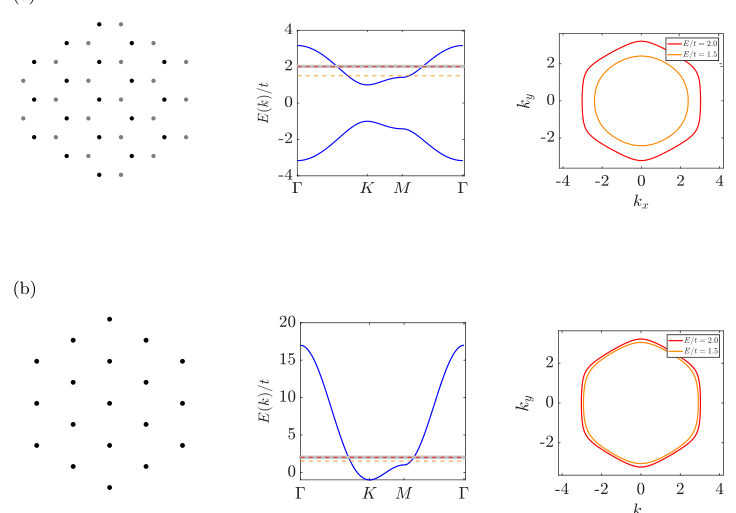
<figcaption class="paper-figure-caption"><b>Fig 1.</b> FIG. 1: L¨owdin projection distorts bands in general. The band structure and iso-energy contours for (a) a two-band model (honeycomb with broken inversion) and (b) its projection at E0/t = 2 (shown in thick grey) onto the black subsystem. Observe that the projected band is distorted and scaled. The right panel shows iso-energy contours at two energies indicated by the dashed lines in the energy spectrum. Comparing (a) and (b) we see that contour at the energy of projection E0/t = 2 (dashed red coinciding with thick grey) remains unchanged, while the contour at any other energy is affected.</figcaption>
</figure>
<figure class="paper-figure-card">
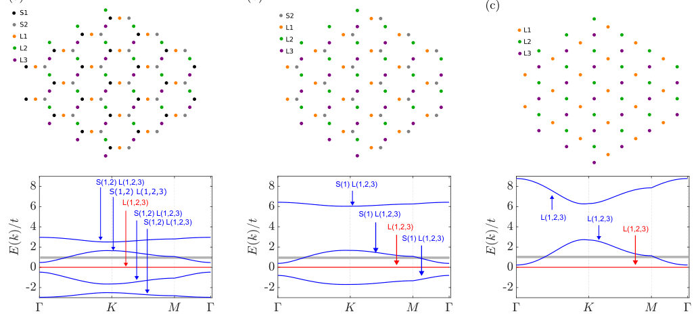
<figcaption class="paper-figure-caption"><b>Fig 2.</b> FIG. 2: Projection preserves flat bands which are marked in red. Dispersive bands are plotted in blue (even if approximately flat). Arrows and attached labels indicate sublattice support of the eigenstates of the respective band, with S and L labeling smaller and larger subsystems, respectively. (a) the 5-component super-honeycomb lattice and its band structure, (b) the same lattice where one of its smaller subsystem components (black dots) is projected out, and (c) where all of the smaller subsystem (black and grey) are projected out at an energy away from the flat and, here chosen at E0/t = 1 (shown by a thick grey line). While the dispersive bands are distorted/scaled with respect to the...</figcaption>
</figure>
<figure class="paper-figure-card">
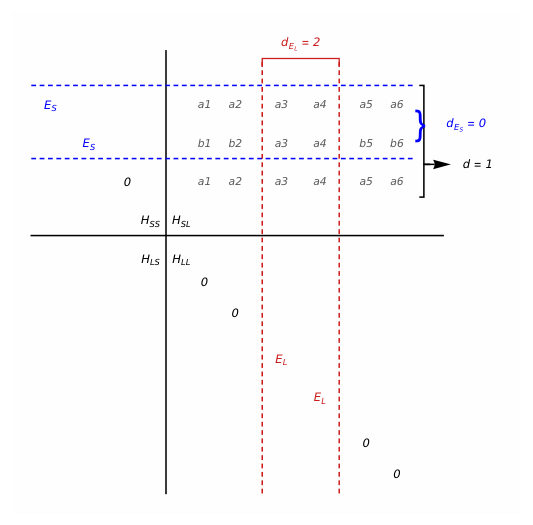
<figcaption class="paper-figure-caption"><b>Fig 3.</b> FIG. 3: Schematic illustration of the parameters d, dES, and dEL. d is the number of the redundant rows of HSL: 1 in the scheme because rows 1 and 3 are identical making one of them redundant. dES is number of the redundant rows of HSL corresponding to the energy block ES: rows 1, 2. Since these rows differ, dES=0. dEL is the number of redundant row-segments in HSL at energy EL. which is 2 here since the row-segment corresponding EL are 3 identical row-segments.</figcaption>
</figure>
<figure class="paper-figure-card">
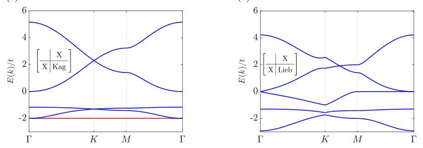
<figcaption class="paper-figure-caption"><b>Fig 4.</b> FIG. 4: Band structure of perturbed sH lattice with perturbations in the HLL block. (a) HLL is the kagome-like - the flat band is preserved under projection. (b) HLL is Lieb-like - the flat band is broken under projection. Both perturbations have flat bands, but Kagom´e’s spectral decomposition involves eigenvectors that are linearly dependent on the rows of HSL sH resulting in the preservation of the flat band.</figcaption>
</figure>
<figure class="paper-figure-card">
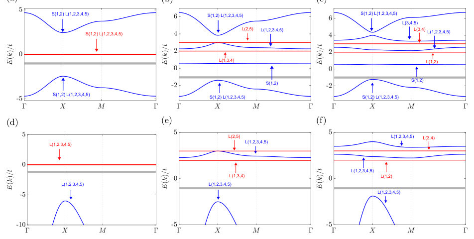
<figcaption class="paper-figure-caption"><b>Fig 5.</b> FIG. 5: Band structures of the bipartite model with 7 atom per unit cell and its perturbed/projected versions. The grey lines indicate the energy, E0/t = −1, at which projections are performed. The number of flat bands and their energies are preserved during projection, as well as the touchings with dispersive bands. (a) Band structure of the bipartite version of H7 with 5 flat bands at E/t = 0 marked in red. (b) Band structure of H7, perturbed with HSL, Eq. (A5): Two of the five original flat bands become dispersive, two flat bands shift to E/t = 2 and one flat band shifts to E/t = 3. The touching of the L(2,5) flat band with the dispersive band at the X-point is explained in the text. (c)...</figcaption>
</figure>
</div>

<p><strong>Summary.</strong> This paper presents a powerful theoretical framework to design flat band systems by utilizing Hilbert space projections from a parent bipartite Hamiltonian. This method is highly advantageous because it avoids the need for fine-tuning parameters or solving difficult inverse problems. The key result is a general, computable bound for the number of flat bands, providing unprecedented tunability in designing quantum materials with desired electronic properties.</p>
<p><strong>Why it may be interesting.</strong> The robust, structural approach to generating flat bands bypasses the need for solving complex inverse eigenvalue problems, offering a powerful, general design tool for realizing exotic quantum phenomena in engineered materials.</p>
<details>
<summary>Detailed structure</summary>
<p><strong>Main problem.</strong> Developing general, fine-tuning-free methods to construct and characterize tunable flat band systems in condensed matter models.</p>
<p><strong>Main result.</strong> The authors show that flat bands can be robustly generated by performing Hilbert space projections from a parent bipartite system, and they derive a general bound to estimate the number of flat bands without solving the full spectrum.</p>
<p><strong>Method.</strong> The core method involves using Löwdin projection techniques on a bipartite Hamiltonian, which allows the preservation of flat band structure even when the projection energy is varied or when the resulting Hamiltonian loses its bipartite nature.</p>
<p><strong>Model / system.</strong> The study focuses on bipartite Hamiltonians, $H$, partitioned into smaller ($S$) and larger ($L$) subsystems. The analysis is applied to lattice models, such as the superhoneycomb lattice, to demonstrate the principle.</p>
<p><strong>Key observables.</strong> The number of zero eigenvalues (nullity) at a specific energy, which quantifies the number of flat bands ($\phi$).</p>
<p><strong>Important parameters / regimes.</strong> The relative sizes of the subsystems ($n$ and $m$), and the energy scale of the projection ($E_0$).</p>
<p><strong>Assumptions / limitations.</strong> The method relies on the system being bipartite for the initial construction, and the general bound derivation assumes certain block-independence properties for equality to hold.</p>
<p><strong>Figures summary.</strong> Figure 1 illustrates band distortion upon projection, while Figure 2 demonstrates that the projection procedure preserves flat bands (marked in red) even when projecting at energies away from the flat band energy.</p>
<p><strong>Paper structure.</strong> The paper introduces the problem of flat band construction, details the projection method using bipartite Hamiltonian partitioning, derives general bounds for flat band counting using nullity arguments, and concludes by showing how perturbations can control the touching points and splitting of these bands.</p>
</details>
<details>
<summary>Abstract</summary>
<p>Systems with flat bands are interesting as they potentially host many exotic quantum phenomena that would be hard to observe in usual systems with dispersive bands. Multiple approaches were developed to construct flat band systems, with most of them requiring fine-tuning and/or solving a challenging inverse-eigenvalue problem. In this article we work with an idea that uses a parent bipartite system to generate a family of flat bands by means of Hilbert space projections. This method is largely free from fine-tuning constraints and allows us to identify conditions for a Hamiltonian to guarantee flat bands at desired energies, with desired degree of degeneracy. We also show that one can control the touching points of the flat band with dispersive bands at any desirable point in the Brillouin zone. In the process, we identify perturbations that preserve the flat bands or split them controllably. This approach provides easy tunability in designing flat band systems with desired properties.</p>
</details>
<p><sub><a href="#top">↑ back to top</a></sub></p>

<p><a id="paper-2610.28902"></a></p>
<h3 id="from-qubit-tensorization-to-gaussian-optimizers-in-bosonic-systems"><a href="http://arxiv.org/abs/2610.28902v1">From Qubit Tensorization to Gaussian Optimizers in Bosonic Systems</a></h3>
<p><strong>Authors:</strong> Salman Beigi, Hami Mehrabi<br>
<strong>Type:</strong> theory · <strong>Category:</strong> quantum information and computing · <strong>PDF:</strong> <a href="https://arxiv.org/pdf/2610.28902v1">https://arxiv.org/pdf/2610.28902v1</a><br>
<strong>Analysis basis:</strong> full PDF text, analyzed in chunks
<strong>Topic relevance:</strong> <code>Keldysh / 2PI / non-Gaussian methods</code> <strong>1/5</strong> · <code>analog quantum simulation</code> <strong>1/5</strong> · <code>correlated / nonlocal dissipation</code> <strong>1/5</strong> · <code>driven-dissipative phase transition</code> <strong>1/5</strong> · <code>methods for driven-dissipative</code> <strong>1/5</strong> · <code>non-equilibrium universality</code> <strong>1/5</strong> · <code>quantum measurements</code> <strong>1/5</strong></p>
<div class="figure-strip-hint">↔ Scroll figures horizontally</div>
<div class="paper-figures-scroll">
<figure class="paper-figure-card">
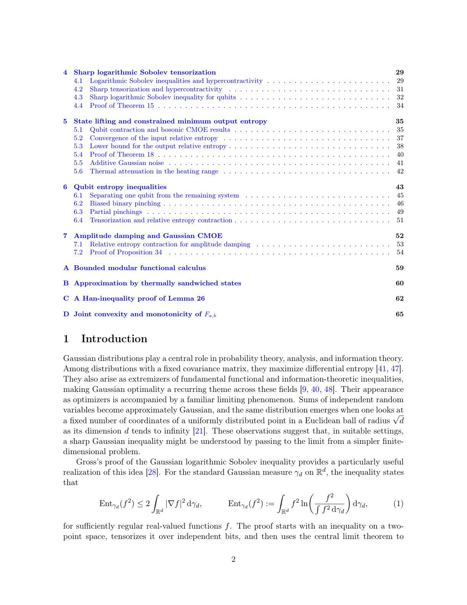
<figcaption class="paper-figure-caption"><b>Fig 1.</b> Low-resolution page preview, page 2</figcaption>
</figure>
<figure class="paper-figure-card">
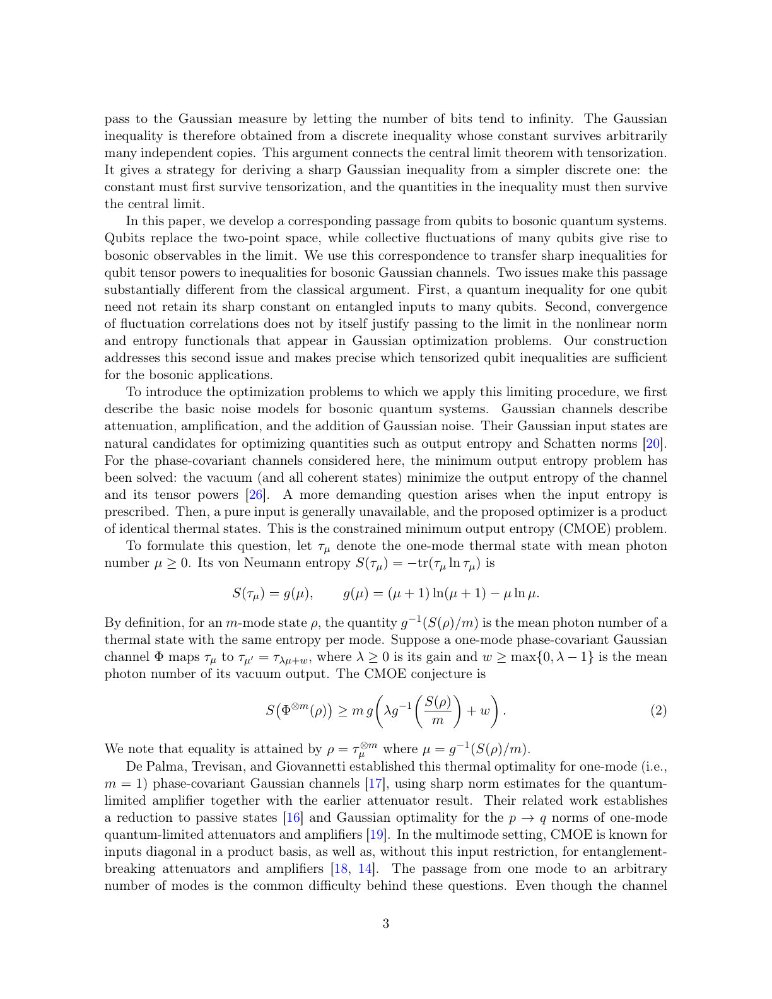
<figcaption class="paper-figure-caption"><b>Fig 2.</b> Low-resolution page preview, page 3</figcaption>
</figure>
<figure class="paper-figure-card">
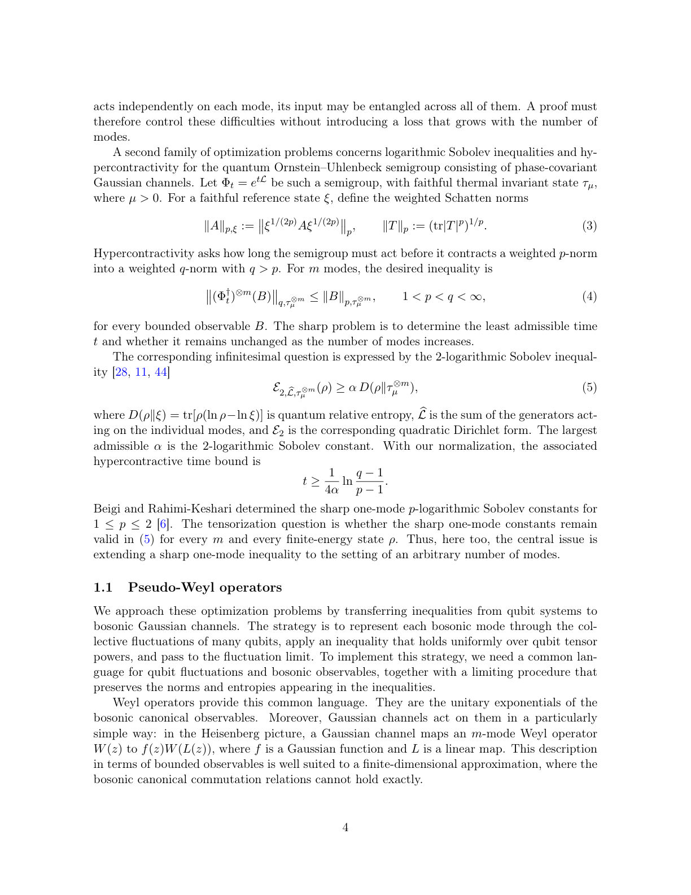
<figcaption class="paper-figure-caption"><b>Fig 3.</b> Low-resolution page preview, page 4</figcaption>
</figure>
<figure class="paper-figure-card">
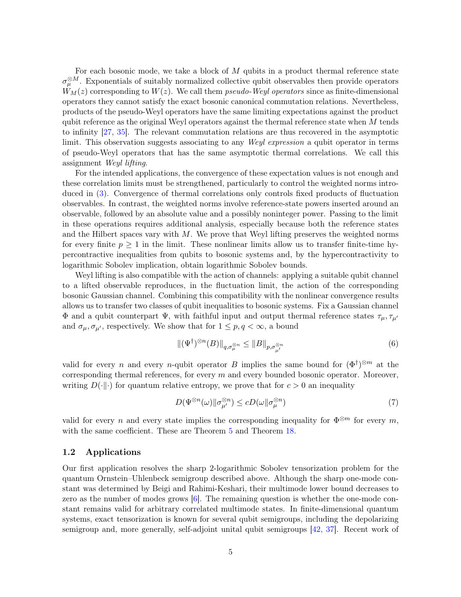
<figcaption class="paper-figure-caption"><b>Fig 4.</b> Low-resolution page preview, page 5</figcaption>
</figure>
<figure class="paper-figure-card">
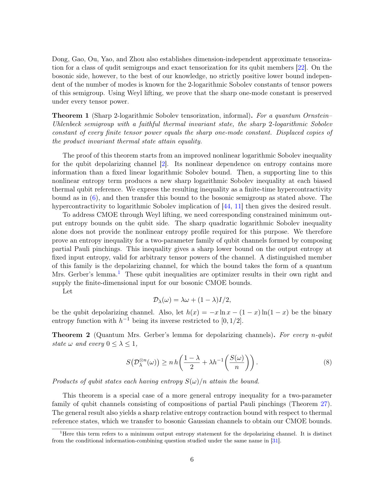
<figcaption class="paper-figure-caption"><b>Fig 5.</b> Low-resolution page preview, page 6</figcaption>
</figure>
</div>

<p><strong>Summary.</strong> This paper introduces a rigorous mathematical framework to transfer sharp quantum inequalities from qubit systems to continuous bosonic quantum systems. By using pseudo-Weyl operators and analyzing the fluctuation limit, the authors prove key results regarding the tensorization of logarithmic Sobolev and entropy inequalities. This advances the understanding of fundamental resource bounds for Gaussian quantum channels relevant to quantum communication and quantum optics.</p>
<p><strong>Why it may be interesting.</strong> This work provides powerful mathematical tools to analyze resource theories (like entropy) in continuous variable quantum systems (bosons) by mapping them onto discrete, well-understood qubit structures, which is crucial for quantum optics and quantum information theory.</p>
<details>
<summary>Detailed structure</summary>
<p><strong>Main problem.</strong> The paper develops a method to derive sharp Gaussian optimality inequalities for bosonic quantum systems by leveraging known inequalities established for simpler qubit systems.</p>
<p><strong>Main result.</strong> They establish transfer theorems that allow the tensorization of qubit inequalities, proving results like the sharp 2-logarithmic Sobolev inequality for the bosonic Ornstein-Uhlenbeck semigroup.</p>
<p><strong>Method.</strong> The core method involves using qubits as quantum two-point spaces, lifting bosonic Weyl operators to pseudo-Weyl operators on large qubit systems, and controlling weighted norms and relative entropy in the fluctuation limit.</p>
<p><strong>Model / system.</strong> The focus is on bosonic quantum systems, particularly those governed by Gaussian channels (e.g., additive noise, thermal attenuators). These are modeled by approximating bosonic modes using the collective fluctuations of many qubits.</p>
<p><strong>Key observables.</strong> Minimum output entropy (CMOE), Logarithmic Sobolev inequalities, Quantum Relative Entropy $D(
ho\|\xi)$, and weighted Schatten norms.</p>
<p><strong>Important parameters / regimes.</strong> The number of modes ($m$), the thermal environment parameters ($    au, \mu$), and the limit taken over the number of qubits ($M     o \infty$).</p>
<p><strong>Assumptions / limitations.</strong> The derivation relies on establishing precise transfer theorems that ensure the sharp constants from the qubit side are preserved when taking the thermodynamic limit to the bosonic side.</p>
<p><strong>Paper structure.</strong> The paper builds from general principles by first establishing the mathematical machinery (Weyl lifting, transfer theorems) and then applying this framework to specific physical problems, such as the Ornstein-Uhlenbeck semigroup and minimum output entropy bounds for Gaussian channels.</p>
</details>
<details>
<summary>Abstract</summary>
<p>We develop a method for deriving Gaussian optimality results for bosonic quantum systems from inequalities for qubit systems. Inspired by Gross's derivation of the Gaussian logarithmic Sobolev inequality from an inequality on the two-point space, we use qubits as quantum two-point spaces and lift bosonic Weyl operators to pseudo-Weyl operators on large qubit systems. By controlling weighted norms and relative entropy in the fluctuation limit, we establish two transfer theorems that convert tensorized qubit inequalities into inequalities for bosonic Gaussian channels. As a first application, we prove that the sharp $2$-logarithmic Sobolev inequality for the bosonic Ornstein--Uhlenbeck semigroup tensorizes without loss in the constant. We also establish a sharp output entropy inequality for tensor powers of a class of qubit channels. This includes a quantum Mrs.~Gerber's lemma determining the minimum output entropy of tensor powers of the qubit depolarizing channel at fixed input entropy. Applying our relative entropy transfer theorem, we obtain multimode constrained minimum output entropy bounds for Gaussian additive-noise channels and thermal attenuators in the heating range.</p>
</details>
<p><sub><a href="#top">↑ back to top</a></sub></p>

<p><a id="paper-2610.28749"></a></p>
<h3 id="bias-preserving-entanglement-of-kerr-cat-qubits-with-an-ats-coupler"><a href="http://arxiv.org/abs/2610.28749v1">Bias-Preserving Entanglement of Kerr-Cat Qubits with an ATS Coupler</a></h3>
<p><strong>Authors:</strong> Kerem Yurtseven, Shantanu R. Jha, Apoorva Limaye, Risav Pokhrel, Muhammad Waqar Amin<br>
<strong>Type:</strong> theory · <strong>Category:</strong> quantum information and computing · <strong>PDF:</strong> <a href="https://arxiv.org/pdf/2610.28749v1">https://arxiv.org/pdf/2610.28749v1</a><br>
<strong>Analysis basis:</strong> full PDF text, analyzed in chunks
<strong>Topic relevance:</strong> <code>QC/QI experiment</code> <strong>1/5</strong> · <code>correlated / nonlocal dissipation</code> <strong>1/5</strong> · <code>driven-dissipative phase transition</code> <strong>1/5</strong> · <code>methods for driven-dissipative</code> <strong>1/5</strong></p>
<div class="figure-strip-hint">↔ Scroll figures horizontally</div>
<div class="paper-figures-scroll">
<figure class="paper-figure-card">
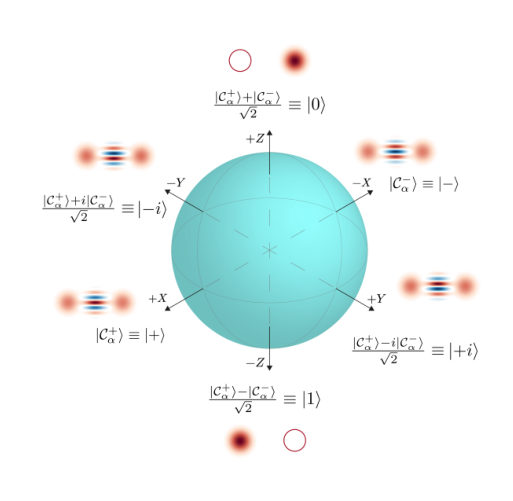
<figcaption class="paper-figure-caption"><b>Fig 1.</b> Figure 1 – Bloch-sphere representation of the Kerr-cat logical subspace. The logical computational states lie at the ±Z poles, while the even and odd cat states lie at the ±X poles.</figcaption>
</figure>
<figure class="paper-figure-card">
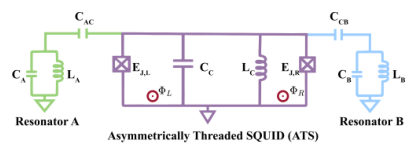
<figcaption class="paper-figure-caption"><b>Fig 2.</b> Figure 2 – Schematic circuit diagram of the Resonator- ATS-Resonator architecture modeled in this study.</figcaption>
</figure>
<figure class="paper-figure-card">
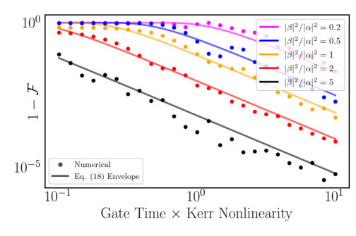
<figcaption class="paper-figure-caption"><b>Fig 3.</b> Figure 3 – Infidelity of Equation 11 vs. KT, for fixed α2 = 2, β2 ∈{2, 4, 10} and fixed β2 = 2, α2 ∈{4, 10}. Numerical results, markers, are compared with the en- velope obtained from Equation 18, solid lines.</figcaption>
</figure>
<figure class="paper-figure-card">
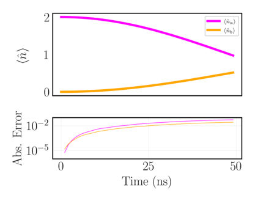
<figcaption class="paper-figure-caption"><b>Fig 4.</b> Figure 4 – Simulation of the g3 interaction realized by driving the ATS at the difference frequency ωp = 2ωa −ωb. The system is initialized with Qubit A (Tar- get) in the two-photon state |2⟩and Qubit B (Control) in the vacuum state |0⟩. The plot displays the absolute error between the ideal theoretical evolution and the full circuit simulation. Physically, the interaction drives a transition |0⟩b |2⟩a →|1⟩b |0⟩a. Over 50 ns, the mean oc- cupation of mode A decreases by about 1 photon, while that of B increases by about 0.5, confirming the expected 2:1 exchange ratio. The upper panel shows the mode occupations, and the lower panel shows their absolute differences from the effective model.</figcaption>
</figure>
<figure class="paper-figure-card">

<figcaption class="paper-figure-caption"><b>Fig 5.</b> Figure 5 presents the simulation results. We initialize the target mode A in various Fock states |n⟩a and observe the trajectory of the control mode B in phase space. The simulated momentum displacement follows the predicted linear dependence on the target photon number.</figcaption>
</figure>
</div>

<p><strong>Summary.</strong> This paper proposes using an Asymmetrically Threaded SQUID (ATS) parametric coupler to create high-fidelity, bias-preserving Controlled-X (CX) gates for Kerr-Cat qubits. By engineering photon-number asymmetry, the authors suppress error propagation from phase-flip to bit-flip errors, achieving high fidelity even in the presence of photon loss. This establishes the ATS coupler as a key component for scalable, fault-tolerant quantum computation architectures.</p>
<p><strong>Why it may be interesting.</strong> This work is highly relevant to AMO/quantum optics as it tackles the practical engineering challenge of building robust quantum gates using superconducting circuit platforms (SQUIDs/Kerr-Cat qubits), requiring deep knowledge of open quantum systems and Hamiltonian engineering.</p>
<details>
<summary>Detailed structure</summary>
<p><strong>Main problem.</strong> The paper addresses the challenge of implementing high-fidelity, bias-preserving entangling gates (CX gates) for Kerr-Cat qubits, which is crucial for fault-tolerant quantum computation.</p>
<p><strong>Main result.</strong> They demonstrate a bias-preserving CX gate achieving 99.69% fidelity and show that the proposed ATS coupler significantly improves the noise bias compared to naive implementations.</p>
<p><strong>Method.</strong> The work relies on numerical simulations of the full circuit Hamiltonian and detailed analysis of error propagation under single-photon loss, comparing theoretical derivations with time-domain simulations.</p>
<p><strong>Model / system.</strong> The system uses Kerr-Cat qubits coupled via an Asymmetrically Threaded SQUID (ATS) parametric coupler. The dynamics are analyzed using the full circuit Hamiltonian and the Lindblad master equation to track error rates.</p>
<p><strong>Key observables.</strong> Gate fidelity ($F$), noise bias ($\eta$), bit-flip error rate ($\Gamma_x$), and phase-flip error rate ($\Gamma_z$).</p>
<p><strong>Important parameters / regimes.</strong> Gate duration of 50 ns, single-photon loss rate of 100 kHz, and the asymmetry parameters of the ATS coupler.</p>
<p><strong>Assumptions / limitations.</strong> The analysis assumes single-photon loss is the dominant error mechanism and utilizes approximations like the Rotating Wave Approximation (RWA) and coherent state approximations.</p>
<p><strong>Figures summary.</strong> Figures illustrate the Bloch-sphere representation of the logical subspace, the schematic circuit diagram of the resonator-ATS-resonator architecture, and comparisons between theoretical infidelity formulas and direct simulation results.</p>
<p><strong>Paper structure.</strong> The paper progresses from establishing the need for bias-preserving gates, detailing the ATS coupler mechanism and achieving high fidelity, to analyzing error sources like single-photon loss, and finally characterizing residual nonlinearities and implementing drive corrections.</p>
</details>
<details>
<summary>Abstract</summary>
<p>Kerr-cat qubits offer a hardware-efficient route to fault-tolerant quantum computing by suppressing bit-flip errors exponentially, while phase-flip errors increase only linearly with the mean photon number. To maintain this protection, entangling operations must be bias-preserving, ensuring that phase-flip errors occurring during the gate do not propagate into bit-flip errors. In this paper, we propose an asymmetrically threaded SQUID (ATS) parametric coupler to implement high-fidelity, bias-preserving entangling gates between Kerr-cat qubits. By engineering a photon-number asymmetry between the control and target modes, we enable fast gate operations that suppress non-adiabatic leakage without complex pulse shaping. Through numerical simulations of the full circuit Hamiltonian, we demonstrate a bias-preserving CX gate achieving 99.69% fidelity in the absence of photon loss for a gate duration of 50 ns. Under a single-photon loss rate of 100 kHz, our protocol yields a noise bias of 9922, exceeding the noise bias of a naive non-bias-preserving CX implementation by approximately a factor of 570. These results support the ATS coupler as a valuable building block for concatenated cat-qubit architectures.</p>
</details>
<p><sub><a href="#top">↑ back to top</a></sub></p>

<p><a id="paper-2610.29373"></a></p>
<h3 id="convergence-analysis-of-the-quantum-blahut-arimoto-algorithm-and-the-contraction-coefficient-of-qubit-amplitude-damping-channels"><a href="http://arxiv.org/abs/2610.29373v1">Convergence Analysis of the Quantum Blahut-Arimoto Algorithm and the Contraction Coefficient of Qubit Amplitude-Damping Channels</a></h3>
<p><strong>Authors:</strong> Junke Han, Yonglong Li<br>
<strong>Type:</strong> theory · <strong>Category:</strong> quantum information and computing · <strong>PDF:</strong> <a href="https://arxiv.org/pdf/2610.29373v1">https://arxiv.org/pdf/2610.29373v1</a><br>
<strong>Analysis basis:</strong> full PDF text, analyzed in chunks
<strong>Topic relevance:</strong> <code>correlated / nonlocal dissipation</code> <strong>1/5</strong> · <code>driven-dissipative phase transition</code> <strong>1/5</strong> · <code>methods for driven-dissipative</code> <strong>1/5</strong></p>
<div class="figure-strip-hint">↔ Scroll figures horizontally</div>
<div class="paper-figures-scroll">
<figure class="paper-figure-card">
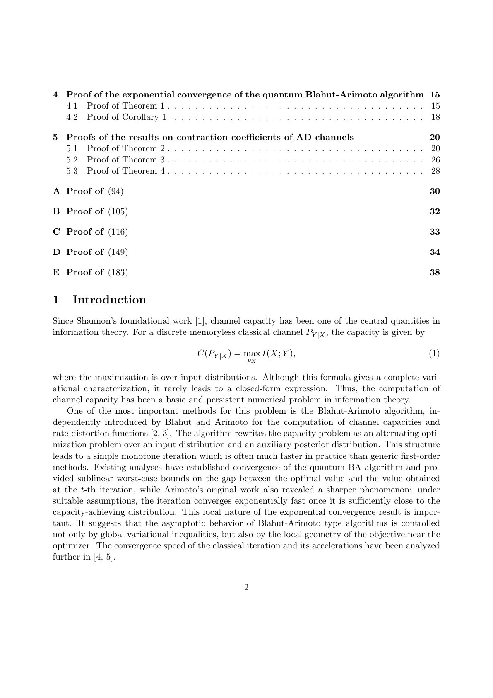
<figcaption class="paper-figure-caption"><b>Fig 1.</b> Low-resolution page preview, page 2</figcaption>
</figure>
<figure class="paper-figure-card">
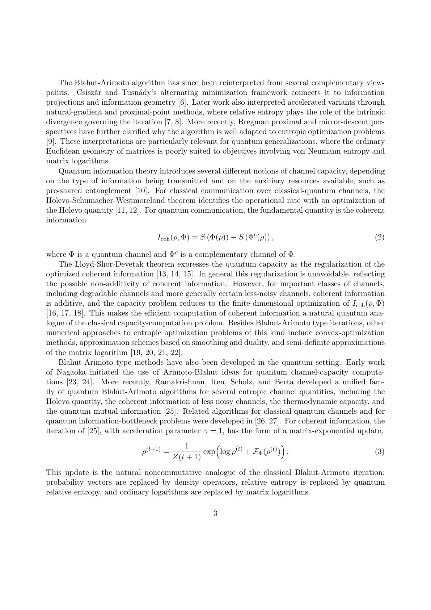
<figcaption class="paper-figure-caption"><b>Fig 2.</b> Low-resolution page preview, page 3</figcaption>
</figure>
<figure class="paper-figure-card">
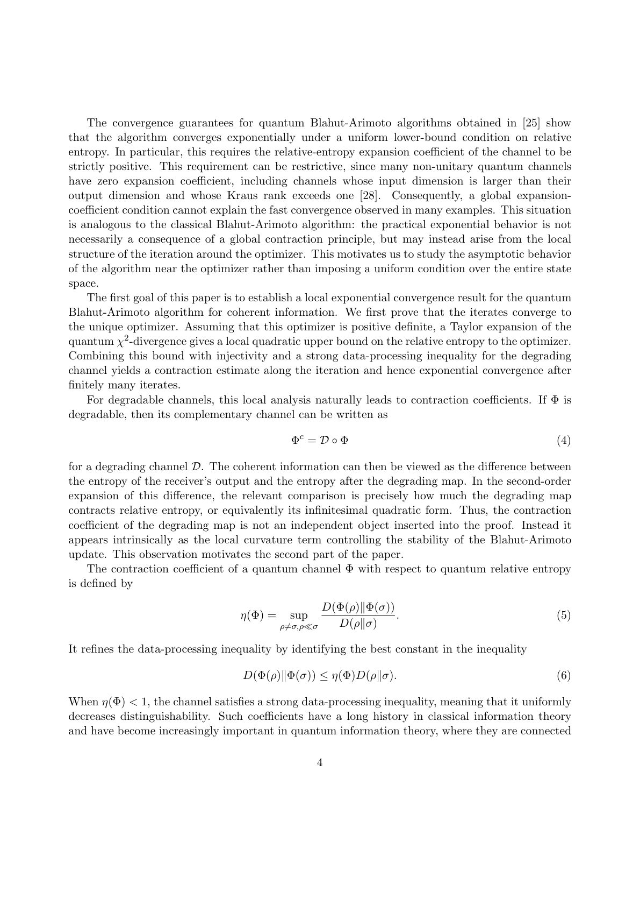
<figcaption class="paper-figure-caption"><b>Fig 3.</b> Low-resolution page preview, page 4</figcaption>
</figure>
<figure class="paper-figure-card">
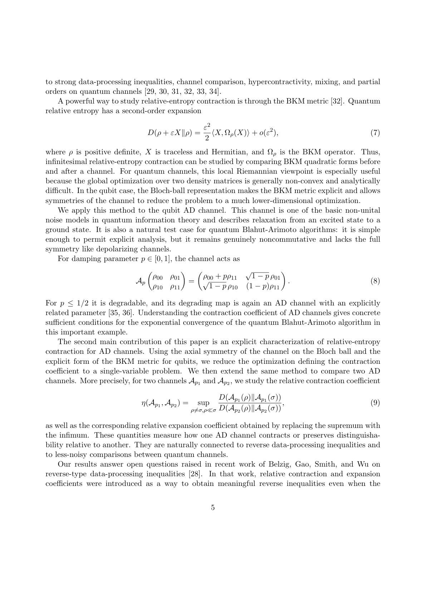
<figcaption class="paper-figure-caption"><b>Fig 4.</b> Low-resolution page preview, page 5</figcaption>
</figure>
<figure class="paper-figure-card">
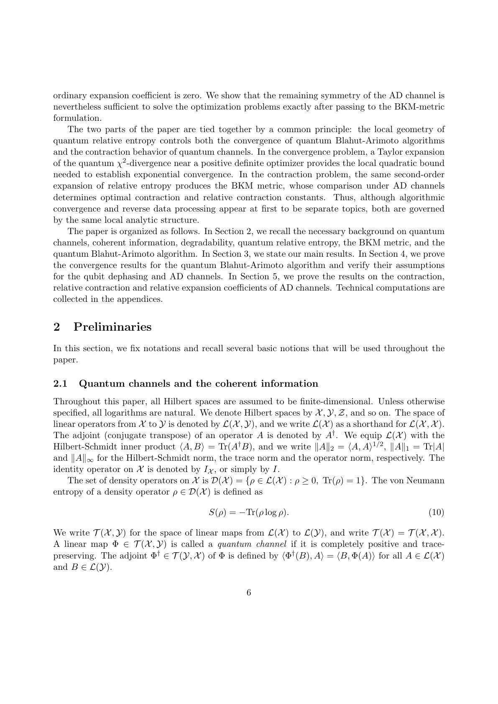
<figcaption class="paper-figure-caption"><b>Fig 5.</b> Low-resolution page preview, page 6</figcaption>
</figure>
</div>

<p><strong>Summary.</strong> This work analyzes the convergence properties of the quantum Blahut-Arimoto algorithm, a tool for calculating quantum channel capacities. By employing the BKM metric, the authors establish that convergence is governed by the relative-entropy contraction coefficient. They apply this theory to the qubit amplitude-damping channel, providing an explicit mathematical characterization of this key contraction parameter.</p>
<p><strong>Why it may be interesting.</strong> The rigorous characterization of channel contraction coefficients using geometric tools like the BKM metric provides deep insights into the stability and information-theoretic limits of open quantum systems, which is crucial for quantum communication protocols.</p>
<details>
<summary>Detailed structure</summary>
<p><strong>Main problem.</strong> The paper investigates the convergence rate of the quantum Blahut-Arimoto (BA) algorithm and derives an explicit characterization of the relative-entropy contraction coefficient for quantum channels.</p>
<p><strong>Main result.</strong> It proves that the quantum BA algorithm converges exponentially for injective degradable channels under a condition related to the relative-entropy contraction coefficient being less than one. This coefficient is explicitly characterized for qubit amplitude-damping channels.</p>
<p><strong>Method.</strong> The analysis employs Taylor expansion around the optimizer and utilizes the Bogoliubov-Kubo-Mori (BKM) metric on the Bloch ball to analyze the local geometry of the quantum relative entropy.</p>
<p><strong>Model / system.</strong> The study focuses on general quantum channels, with a specific, detailed analysis performed on the qubit amplitude-damping (AD) channel, which models energy relaxation in qubits.</p>
<p><strong>Key observables.</strong> Coherent information ($I_{	ext{coh}}$), relative-entropy contraction coefficient ($\eta(\Phi)$), and the BKM metric coefficients.</p>
<p><strong>Important parameters / regimes.</strong> The contraction coefficient $\eta(\Phi)$ must be strictly less than one for guaranteed exponential convergence.</p>
<p><strong>Assumptions / limitations.</strong> The analysis relies on the channel being degradable and uses local quadratic bounds derived from the Taylor expansion of the relative entropy divergence.</p>
<p><strong>Figures summary.</strong> Not specified, but the analysis involves deriving ratios of second derivatives ($\Gamma(u)$) and proving matrix inequalities ($K \ge 0$) related to the channel structure.</p>
<p><strong>Paper structure.</strong> The paper first establishes the convergence criteria using the BKM metric, then applies this framework to derive explicit formulas for the relative contraction coefficients of the AD channel, culminating in detailed mathematical proofs involving functional inequalities.</p>
</details>
<details>
<summary>Abstract</summary>
<p>In this work, we investigate the convergence rate of the quantum Blahut-Arimoto (BA) algorithm proposed for computing the coherent information of less noisy quantum channels. Previous work established exponential convergence under certain restrictive assumptions on the channel. Using a Taylor expansion around a positive definite optimizer, we show that, for an injective degradable channel whose degrading channel has a relative-entropy contraction coefficient strictly less than one, the algorithm converges at an exponential rate after sufficiently many iterations. We further verify this condition for qubit amplitude-damping (AD) channels in the relevant parameter regime.   In addition, by analyzing the Bogoliubov-Kubo-Mori (BKM) metric on the Bloch ball, we derive an explicit characterization of the relative-entropy contraction coefficient of qubit AD channels. The proposed approach is further extended to calculate the relative contraction coefficient and the relative expansion coefficient of two qubit AD channels.</p>
</details>
<p><sub><a href="#top">↑ back to top</a></sub></p>

<p><a id="paper-2610.29892"></a></p>
<h3 id="unambiguous-determination-of-the-thz-conductivity-in-driven-ybamath513mathcumath514mathomath515math"><a href="http://arxiv.org/abs/2610.29892v1">Unambiguous determination of the THz conductivity in driven YBa$_2$Cu$_3$O$_{6+x}$</a></h3>
<p><strong>Authors:</strong> K. Kaj, K. H. Martens, D. Choi, M. Buzzi, D. Nicoletti, Y. Liu, B. Keimer, A. Cavalleri<br>
<strong>Type:</strong> experiment · <strong>Category:</strong> strongly correlated electrons · <strong>PDF:</strong> <a href="https://arxiv.org/pdf/2610.29892v1">https://arxiv.org/pdf/2610.29892v1</a><br>
<strong>Analysis basis:</strong> full PDF text, analyzed in chunks
<strong>Topic relevance:</strong> <code>Keldysh / 2PI / non-Gaussian methods</code> <strong>1/5</strong> · <code>methods for driven-dissipative</code> <strong>1/5</strong> · <code>quantum measurements</code> <strong>1/5</strong></p>
<div class="figure-strip-hint">↔ Scroll figures horizontally</div>
<div class="paper-figures-scroll">
<figure class="paper-figure-card">
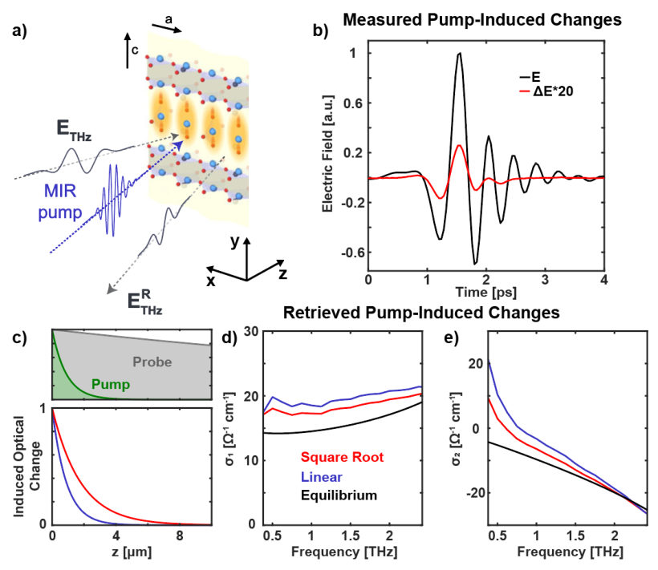
<figcaption class="paper-figure-caption"><b>Fig 1.</b> Figure 1. (a) Schematic of the mid-IR pump, THz probe experiment on YBCO. (b) Representative reflected probe field, showing the equilibrium field 𝐸 (black) and photoinduced change 𝛥𝐸 (red). (c) Upper: Spatial profiles for c-axis polarized light, the THz probe field at 1 THz (black) penetrates substantially deeper than the mid-IR pump intensity (green). Lower: Corresponding profiles of the photoinduced THz optical change for the linear (blue) and square root (red) models. (d,e) Real and imaginary parts of the equilibrium (black) and photoinduced optical conductivity reconstructed with the linear (blue) and square-root (red) models.</figcaption>
</figure>
<figure class="paper-figure-card">
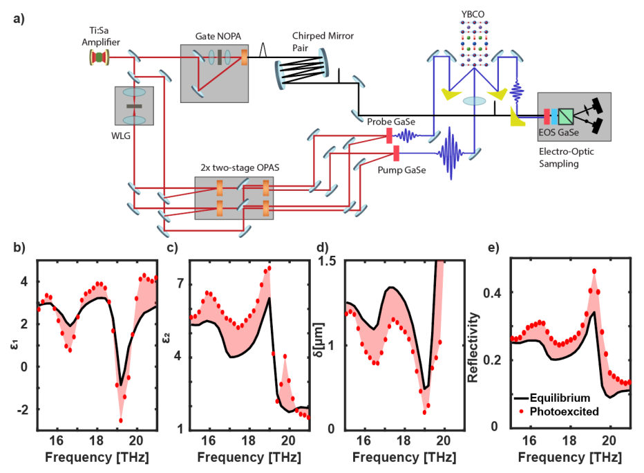
<figcaption class="paper-figure-caption"><b>Fig 2.</b> Figure 2. (a) Schematic of mid-IR pump–probe setup. CEP-stable pump and probe pulses are generated by difference- frequency mixing of the signal and idler outputs of two OPAs in separate GaSe crystals. The reflected probe is detected by electro-optic sampling (EOS) in a third GaSe crystal using a short gate pulse generated by a separate noncollinear OPA and compressed with a chirped-mirror pair. (b-e) Mid-IR optical properties of YBCO in equilibrium (black) and after photoexcitation (red) at 100 K with a pump fluence of 7.8 mJ/cm2. (b,c) Real and imaginary part of the dielectric function, (d) penetration depth, (e) reflectivity.</figcaption>
</figure>
<figure class="paper-figure-card">

<figcaption class="paper-figure-caption"><b>Fig 3.</b> Figure 3 shows the fluence dependence of the change in the penetration depth and reflectivity, averaged over each phonon resonance. The penetration depth decreases and the reflectivity increases monotonically with fluence. Both effects therefore grow in importance at high fluence and must be included in the reconstruction.</figcaption>
</figure>
<figure class="paper-figure-card">

<figcaption class="paper-figure-caption"><b>Fig 4.</b> Figure 3 Fluence dependence of the penetration depth and reflectivity changes, averaged over the 16.5 THz (blue) and 19.3 THz (red) phonon resonances.</figcaption>
</figure>
<figure class="paper-figure-card">
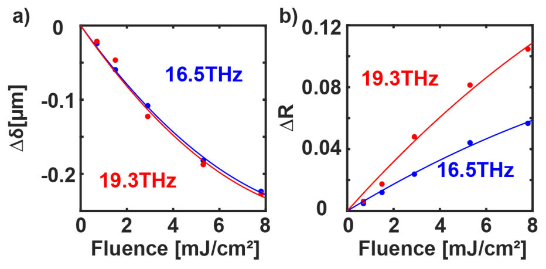
<figcaption class="paper-figure-caption"><b>Fig 5.</b> Figure 4(a) shows the total photoinduced conductivity change for the 19.3 THz pumping as a function of absorbed fluence, reconstructed with the equilibrium (blue) and photoexcited (red) pump parameters, with solid curves showing the power-law fits. Accounting for the photoinduced changes in the optical properties at the pump frequency, the reduced penetration depth leads to a larger reconstructed conductivity change at each incident fluence, while the increased reflectivity reduces the absorbed fluence. The dependence on absorbed fluence is therefore steeper and closer to linear. The same trend is observed for 16.5 THz pump, shown in Fig. 4(d). We also tested the saturation model proposed...</figcaption>
</figure>
</div>

<p><strong>Summary.</strong> This work uses THz pump-probe spectroscopy on YBCO to study light-induced superconductivity. The key innovation is resolving ambiguities caused by the pump field's changing optical properties at high fluences. By self-consistently modeling the pump's reflection and penetration depth, the authors confirm the existence and quantify the superconducting state induced by the mid-IR pump.</p>
<p><strong>Why it may be interesting.</strong> The rigorous treatment of pump-probe artifacts, especially the fluence dependence of the excitation field itself, is crucial for extracting reliable many-body dynamics signatures in strongly correlated materials.</p>
<details>
<summary>Detailed structure</summary>
<p><strong>Main problem.</strong> To unambiguously determine the transient THz conductivity in YBa2Cu3O6+x by resolving ambiguities arising from the sublinear growth of the THz response with increasing mid-infrared pump fluence.</p>
<p><strong>Main result.</strong> The sublinear growth of the signal is largely attributed to the enhanced reflection and reduced penetration depth of the pump field at high fluences, allowing for a quantitative confirmation of a light-induced superconducting state.</p>
<p><strong>Method.</strong> Mid-infrared pump-THz probe time-domain spectroscopy, employing a self-consistent iterative procedure to account for the fluence dependence of the pump field's optical constants.</p>
<p><strong>Model / system.</strong> The study investigates the photoinduced optical properties of YBa2Cu3O6+x, a high-temperature cuprate superconductor, using pump-probe techniques.</p>
<p><strong>Key observables.</strong> Complex optical constants, THz conductivity (sigma), pump penetration depth, and pump reflectivity, all as functions of pump fluence.</p>
<p><strong>Important parameters / regimes.</strong> Mid-infrared pump fluence, THz frequency range (15-20 THz), and temperature (100 K).</p>
<p><strong>Assumptions / limitations.</strong> The analysis requires self-consistently measuring the pump field's optical response at high fluences, rather than assuming equilibrium values.</p>
<p><strong>Figures summary.</strong> Figures illustrate the fluence dependence of pump penetration depth and reflectivity, and compare results from conventional linear-in-fluence analysis against the self-consistent reconstruction.</p>
<p><strong>Paper structure.</strong> The paper progresses from identifying the ambiguity in initial measurements to proposing that the pump field's own optical changes (reflection/depth) must be included in the reconstruction, leading to a self-consistent quantitative determination of the photoinduced conductivity.</p>
</details>
<details>
<summary>Abstract</summary>
<p>Mid-infrared pump, THz probe experiments in YBa$_2$Cu$_3$O$_{6+x}$ yield evidence of a high-temperature transient state of the material with the optical properties of a superconductor. However, there are ambiguities in the extracted transient c-axis THz optical properties, primarily resulting from the sublinear growth of the THz response with increasing mid-infrared pump fluence. It was proposed that this effect may be related to saturation of the material's response, which would then perturb its spatial profile and lead one to overestimate the induced change in the transient optical properties. Yet, sublinear growth of the signal could also arise from other effects unrelated to saturation, for example from a change in reflectivity or deposition depth for the pump pulses. Here, we remove this ambiguity by experimentally measuring the fluence-dependent complex optical constants at the 15-20 THz frequencies of the pump. We show that the observed sublinear growth is to be attributed in large part to the enhanced reflection and reduced penetration depth of the pump field at high fluences. When taking into account these findings, we confirm the original interpretation of a light-induced superconducting state both qualitatively and quantitatively.</p>
</details>
<p><sub><a href="#top">↑ back to top</a></sub></p>

<p><a id="paper-2610.29324"></a></p>
<h3 id="ab-initio-approach-for-quantum-magnets-with-coupled-cluster-and-transcorrelation"><a href="http://arxiv.org/abs/2610.29324v1">Ab Initio Approach for Quantum Magnets with Coupled Cluster and Transcorrelation</a></h3>
<p><strong>Authors:</strong> Kristoffer Simula, Nikolay A. Bogdanov, Olle Gunnarsson, Daniel Kats, Ali Alavi<br>
<strong>Type:</strong> theory · <strong>Category:</strong> strongly correlated electrons · <strong>PDF:</strong> <a href="https://arxiv.org/pdf/2610.29324v1">https://arxiv.org/pdf/2610.29324v1</a><br>
<strong>Analysis basis:</strong> full PDF text, analyzed in chunks
<strong>Topic relevance:</strong> <code>Keldysh / 2PI / non-Gaussian methods</code> <strong>1/5</strong> · <code>analog quantum simulation</code> <strong>1/5</strong></p>
<div class="figure-strip-hint">↔ Scroll figures horizontally</div>
<div class="paper-figures-scroll">
<figure class="paper-figure-card">
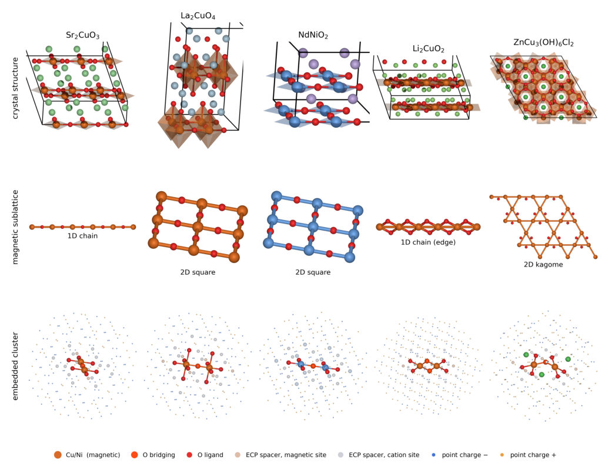
<figcaption class="paper-figure-caption"><b>Fig 1.</b> FIG. 1. Top row: the structures of the materials studied in this work. Middle row: the magnetic sublattices of the materials. Bottom row: the atomic embedding clusters used in the calculations. The embedding point-charge clouds at the atomic sites of the materials are depicted only in the proximity of the embedding clusters. Figure prepared with AI assistance and verified by the authors; see Acknowledgments.</figcaption>
</figure>
<figure class="paper-figure-card">
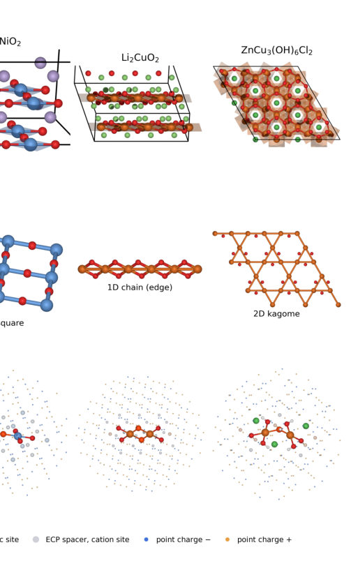
<figcaption class="paper-figure-caption"><b>Fig 2.</b> Figure 2 presents the Cu 3d𝑥2−𝑦2 and O 2p occupied orbitals for each system, solved with the aforementioned procedure in the TZ/DZ basis. Also the virtual Cu 4d𝑥2−𝑦2 and O 3p orbitals are presented, obtained by projecting the atomic orbitals of the Cu and O atoms into the virtual space. These orbitals, along with their degenerate counterparts, should all be included into the active space of a CASPT2 or NEVPT2 calculation, in order to get accurate magnetic couplings [18]. However, we claim that coupled cluster methods can couple these orbitals up to a sufficient degree to capture the important correlations. We can see in Fig. 2 that the systems with a 180◦bridging angle have very similar and...</figcaption>
</figure>
<figure class="paper-figure-card">
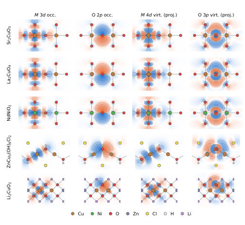
<figcaption class="paper-figure-caption"><b>Fig 3.</b> FIG. 2. Localized CASSCF orbitals in the magnetic-sublattice plane of each material: the magnetic 3𝑑and bridging-oxygen 2𝑝occupied orbitals, and their virtual-space breathing partners, obtained by pro- jecting the correspondingly oriented 4𝑑(3𝑝) atomic orbital onto the virtual space. Blue/orange: positive/negative amplitude on a sym- metric log scale; contour lines at ±0.02, 0.05, 0.1 a.u. Figure prepared with AI assistance and verified by the authors; see Acknowledgments.</figcaption>
</figure>
<figure class="paper-figure-card">
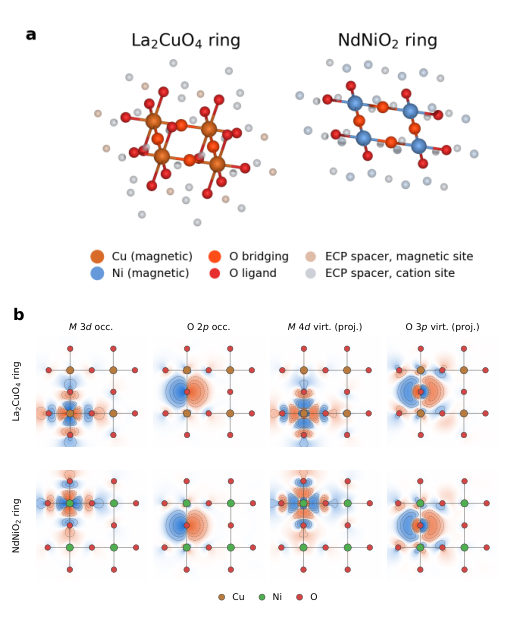
<figcaption class="paper-figure-caption"><b>Fig 4.</b> FIG. 3. a, The 4-site (ring) embedding clusters of La2CuO4 and NdNiO2, in the same representation as the embedded clusters of Fig. 1; the point-charge clouds are omitted. b, Localized CASSCF orbitals in the magnetic-sublattice plane of the 4-site clusters, ob- tained with the same procedure as in Fig. 2. Figure prepared with AI assistance and verified by the authors; see Acknowledgments.</figcaption>
</figure>
<figure class="paper-figure-card">
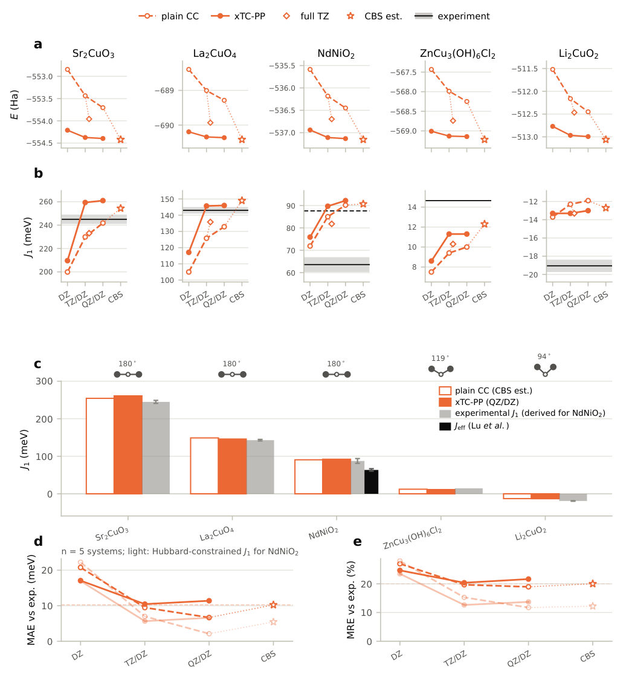
<figcaption class="paper-figure-caption"><b>Fig 5.</b> FIG. 4. Total energies and spin-coupling constant 𝐽1 from 2det-DCSD, without (non-TC CC: dashed lines, open symbols) and with the xTC-PP treatment (solid lines, filled symbols). a, Total energy of the singlet state: non-TC CC over the composite bases, with the full-TZ energy as the offset diamond beside TZ/DZ, continued to its CBS estimate (star), and xTC-PP at the DZ, TZ/DZ and QZ/DZ projections, as computed. b, Basis-set convergence of 𝐽1, with method and basis notation as in (a); the horizontal black line is the experimental value and the grey band its reported uncertainty; for NdNiO2 the black dashed line is the Hubbard-constrained 𝐽1 (see Supplement [47]). c, 2det-DCSD against...</figcaption>
</figure>
</div>

<p><strong>Summary.</strong> This work presents an advanced <em>ab initio</em> method to calculate the magnetic exchange coupling ($J_1$) in various quantum magnets. By applying transcorrelated (TC) theory, the authors overcome the severe basis set limitations of standard coupled cluster approaches. The results establish TC as a highly accurate and computationally affordable tool for studying strongly correlated materials across different magnetic regimes.</p>
<p><strong>Why it may be interesting.</strong> While focused on solid-state magnetism, the development and application of transcorrelated methods represent a powerful, generalizable theoretical tool for accurately treating strong electron correlation in complex quantum systems, which has relevance across many-body physics.</p>
<details>
<summary>Detailed structure</summary>
<p><strong>Main problem.</strong> The primary challenge is accurately determining the nearest-neighbour exchange coupling ($J_1$) in quantum magnets, a calculation that demands high-level correlation treatments and large basis sets.</p>
<p><strong>Main result.</strong> The authors demonstrate that transcorrelated (TC) methods can reproduce Complete Basis Set (CBS) estimates for $J_1$ with modest basis sets, achieving high accuracy at a low computational cost.</p>
<p><strong>Method.</strong> The study employs embedded-cluster methodology using 2-determinant coupled cluster (2det-CC) and introduces and validates the transcorrelated (TC) approach for strongly correlated solid-state systems.</p>
<p><strong>Model / system.</strong> The calculations are performed on five oxygen-bridged spin-1/2 quantum magnets ($   ext{Sr}_2   ext{CuO}_3$, $  ext{La}_2   ext{CuO}_4$, etc.) spanning geometries that induce a crossover from antiferromagnetic to ferromagnetic coupling.</p>
<p><strong>Key observables.</strong> The nearest-neighbour exchange coupling ($J_1$) and the singlet-triplet gap ($   ext{E}_{    ext{ST}}$) in model systems.</p>
<p><strong>Important parameters / regimes.</strong> Bridging angles ranging from $180^\circ$ to $94^\circ$; the need to extrapolate results to the Complete Basis Set (CBS) limit.</p>
<p><strong>Assumptions / limitations.</strong> The primary approximations involve using 2-determinant coupled cluster (limited to single and double excitations) and the necessity of including 'orbital-breathing effects' to capture superexchange accurately.</p>
<p><strong>Figures summary.</strong> Not specified, but the notes reference tables comparing $  ext{E}_{    ext{ST}}$ across different methods and figures illustrating the crystal structures and embedding clusters used.</p>
<p><strong>Paper structure.</strong> The paper first establishes the difficulty of calculating $J_1$ using standard methods, then applies 2det-CC and introduces TC theory, demonstrating its superior accuracy and efficiency compared to standard CC methods when approaching the CBS limit.</p>
</details>
<details>
<summary>Abstract</summary>
<p>The nearest-neighbour exchange coupling $J_1$ is the simplest ingredient of model Hamiltonians used to understand magnetism in real materials. Nevertheless, its ab initio determination requires a high-level correlation treatment and a large basis for wave function expansion. Here we compute $J_1$ for five oxygen-bridged spin-1/2 quantum magnets --- Sr$_2$CuO$_3$, La$_2$CuO$_4$, NdNiO$_2$, ZnCu$_3$(OH)$_6$Cl$_2$, and Li$_2$CuO$_2$ --- spanning bridging angles from 180$^\circ$ to 94$^\circ$ and the crossover from antiferromagnetic to ferromagnetic coupling, using embedded-cluster methodology. To describe the open-shell singlets we use 2-determinant coupled cluster with single and double excitations, which recovers the orbital-breathing enhancement of superexchange from a minimal reference. Basis-set errors are found to be large: extrapolation to the complete basis-set (CBS) limit shifts $J_1$ by up to 50 meV from bases of double-$ζ$ quality. Transcorrelated Hamiltonians reproduce the CBS estimates with modest basis set sizes, yielding an excellent accuracy against experiment at highly affordable cost. These results are the first application of transcorrelated methods in strongly correlated solid-state systems, and establish transcorrelation as a powerful theory in computational research of materials.</p>
</details>
<p><sub><a href="#top">↑ back to top</a></sub></p>

<p><a id="paper-2610.29190"></a></p>
<h3 id="alignment-of-the-amplitudes-of-stored-states-for-solving-the-associative-memory-problem-using-quantum-annealing"><a href="http://arxiv.org/abs/2610.29190v1">Alignment of the amplitudes of stored states for solving the associative memory problem using quantum annealing</a></h3>
<p><strong>Authors:</strong> Vladimir E. Zobov, Ivan S. Pichkovskiy<br>
<strong>Type:</strong> theory · <strong>Category:</strong> disordered systems and neural networks · <strong>PDF:</strong> <a href="https://arxiv.org/pdf/2610.29190v1">https://arxiv.org/pdf/2610.29190v1</a><br>
<strong>Analysis basis:</strong> full PDF text, analyzed in chunks
<strong>Topic relevance:</strong> <code>analog quantum simulation</code> <strong>1/5</strong> · <code>quantum measurements</code> <strong>1/5</strong></p>
<div class="figure-strip-hint">↔ Scroll figures horizontally</div>
<div class="paper-figures-scroll">
<figure class="paper-figure-card">
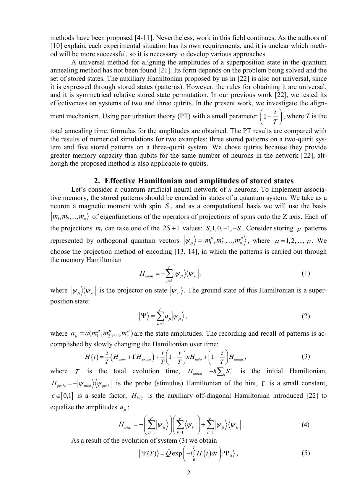
<figcaption class="paper-figure-caption"><b>Fig 1.</b> Low-resolution page preview, page 2</figcaption>
</figure>
<figure class="paper-figure-card">
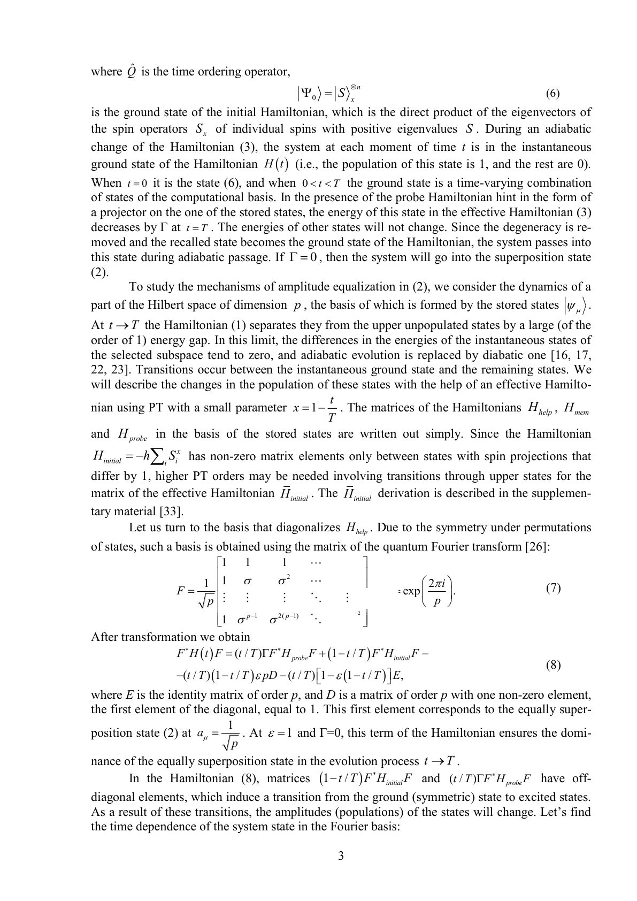
<figcaption class="paper-figure-caption"><b>Fig 2.</b> Low-resolution page preview, page 3</figcaption>
</figure>
<figure class="paper-figure-card">
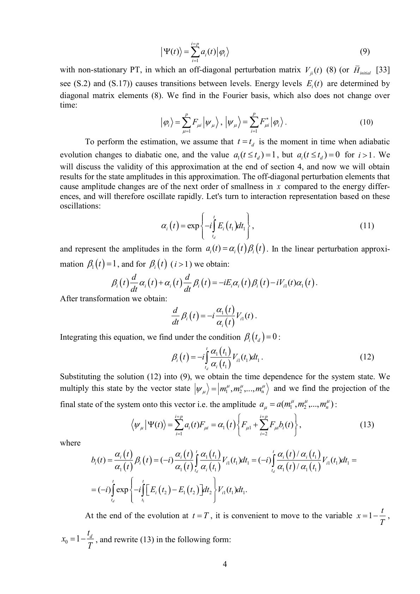
<figcaption class="paper-figure-caption"><b>Fig 3.</b> Low-resolution page preview, page 4</figcaption>
</figure>
<figure class="paper-figure-card">
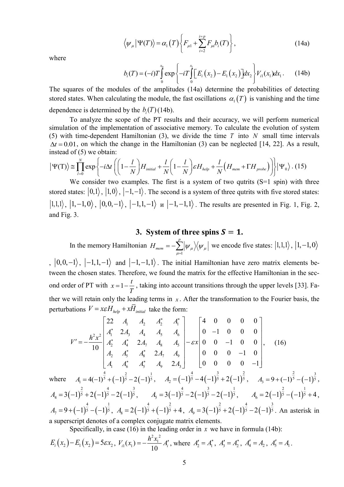
<figcaption class="paper-figure-caption"><b>Fig 4.</b> Low-resolution page preview, page 5</figcaption>
</figure>
<figure class="paper-figure-card">
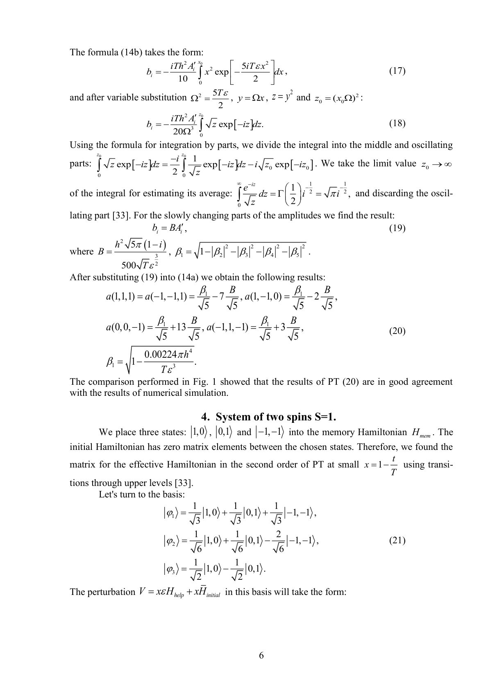
<figcaption class="paper-figure-caption"><b>Fig 5.</b> Low-resolution page preview, page 6</figcaption>
</figure>
</div>

<p><strong>Summary.</strong> This paper develops a theoretical method to improve quantum associative memory retrieval using quantum annealing. It introduces an auxiliary Hamiltonian to force the stored state amplitudes into an equal superposition. By combining numerical simulation with advanced perturbation theory, the authors derive explicit formulas for the final state probabilities, demonstrating the technique's applicability to multi-spin quantum systems.</p>
<p><strong>Why it may be interesting.</strong> The use of quantum annealing to solve optimization problems, particularly by engineering the Hamiltonian to control state amplitudes, provides a theoretical framework relevant to understanding quantum machine learning models and complex quantum dynamics.</p>
<details>
<summary>Detailed structure</summary>
<p><strong>Main problem.</strong> The paper addresses the challenge of solving the associative memory problem using quantum annealing by ensuring the amplitudes of stored quantum states are properly aligned.</p>
<p><strong>Main result.</strong> The authors propose an auxiliary Hamiltonian to equalize the amplitudes, and they derive analytical formulas showing that the final state amplitudes can be accurately predicted using perturbation theory.</p>
<p><strong>Method.</strong> The analysis employs time-dependent quantum mechanics, utilizing both numerical modeling and perturbation theory (PT) in the Fourier basis to track amplitude evolution.</p>
<p><strong>Model / system.</strong> The model is a quantum artificial neural network implemented on a system of spins (qutrits, S=1), governed by a time-dependent Hamiltonian incorporating a memory term and an auxiliary Hamiltonian.</p>
<p><strong>Key observables.</strong> The primary observables are the state amplitudes $a_{\mu}(t)$ and the final detection probabilities $|a_{\mu}(T)|^2$ for the stored patterns.</p>
<p><strong>Important parameters / regimes.</strong> Key parameters include the annealing time $T$, the coupling strengths $\epsilon$ and $\Gamma$, and the small parameters used in the PT expansion, such as $t_x/T$.</p>
<p><strong>Assumptions / limitations.</strong> The analysis relies heavily on perturbation theory, assuming that the dynamics can be separated into slowly varying and rapidly oscillating components, and that the transition time $t_d$ is appropriately small relative to $T$.</p>
<p><strong>Figures summary.</strong> Figures compare the calculated detection probabilities (for 2 and 3 spins) derived from perturbation theory against results obtained from direct numerical simulations.</p>
<p><strong>Paper structure.</strong> The paper first introduces the Hamiltonian and the goal of amplitude alignment. It then develops the theoretical framework using the Fourier basis and perturbation theory to derive effective Hamiltonians. Finally, it applies these methods to specific systems (2 and 3 spins) to calculate and compare detection probabilities with numerical results.</p>
</details>
<details>
<summary>Abstract</summary>
<p>The solution of combinatorial optimization problems by means of quantum annealing is based on the preparation of an equally superposition state. Such superposition is crucial to the associative memory problem of correctly recalling patterns. In this paper, we study the alignment of the amplitudes of stored states in memory using the proposed auxiliary Hamiltonian, which is switched off at the end of evolution. The results of the algorithm execution were obtained both by numerical modeling and by the perturbation theory method, which made it possible to obtain the dependences on physical parameters in explicit form. As examples, systems of two and three qutrits, represented by spins S=1, are considered. Since the Hamiltonian is expressed in a univer-sal form through projectors onto states stored in memory, it can be used for other quantum sys-tems (platforms).</p>
</details>
<p><sub><a href="#top">↑ back to top</a></sub></p>

<p><a id="paper-2610.29218"></a></p>
<h3 id="geometry-controlled-zeros-of-resonant-kelvin-wave-conversion-in-four-spatial-dimensions"><a href="http://arxiv.org/abs/2610.29218v1">Geometry-controlled zeros of resonant Kelvin-wave conversion in four spatial dimensions</a></h3>
<p><strong>Authors:</strong> Wei-can Yang, Xiang-dong Xu, Cheng Li<br>
<strong>Type:</strong> theory · <strong>Category:</strong> quantum gases · <strong>PDF:</strong> <a href="https://arxiv.org/pdf/2610.29218v1">https://arxiv.org/pdf/2610.29218v1</a><br>
<strong>Analysis basis:</strong> full PDF text, analyzed in chunks
<strong>Topic relevance:</strong> <code>Keldysh / 2PI / non-Gaussian methods</code> <strong>1/5</strong> · <code>correlated / nonlocal dissipation</code> <strong>1/5</strong></p>
<div class="figure-strip-hint">↔ Scroll figures horizontally</div>
<div class="paper-figures-scroll">
<figure class="paper-figure-card">
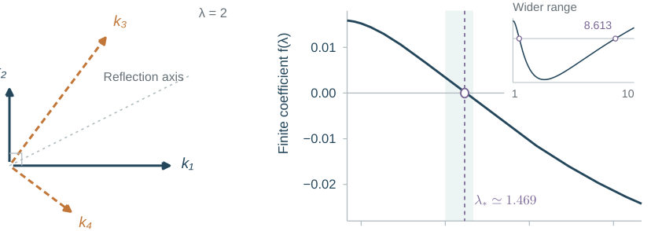
<figcaption class="paper-figure-caption"><b>Fig 1.</b> Figure 1: A zero of the finite nonlocal interaction at exact resonance. (a) The quartet (3) at λ = 2. For incoming wavevectors k1, k2, the reference wave number is q = |k2| and their ratio is λ = |k1|/|k2|. Reflec- tion across the line through the origin parallel to k1 + k2 preserves the paired wave-number magnitudes. Solid and dashed arrows denote incoming and outgoing waves; axes are tangent wavevector components divided by q. (b) The incompressible coefficient f(λ), with first zero λ∗≃1.469. Shading marks the matching interval I = [1.4, 1.5]. The wider-range inset also shows the second fluid zero λ∗∗≃8.613. The microscopic zero in Eq. (8) approaches the first root as q →0.</figcaption>
</figure>
<figure class="paper-figure-card">
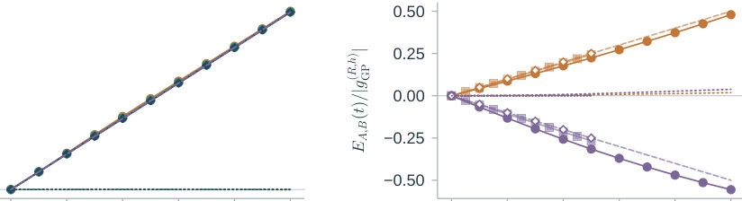
<figcaption class="paper-figure-caption"><b>Fig 2.</b> Figure 3: Coherent mixing in the GP model. A is the common input amplitude; EA is the receiver increment with linear phase removed, divided by A3 [Eq. (9)]. (a) Shape A: q = 0.4, A = 0.02, 0.01. (b) A/B: q = 0.2, normalized by |g(R,h) GP |; colors distinguish shapes, circles/squares denote A = 0.01, 0.005. Both panels: solid Im, dotted Re; diamonds are two-amplitude estimates. Dashed static predictions use independent same-grid GP coefficients, −ig(R,h) GP t. Fixed pump/seed phases reveal opposite generated phases. These A/B quartets differ from those in Fig. 2; controls are in [25].</figcaption>
</figure>
</div>

<p><strong>Summary.</strong> This paper investigates resonant energy conversion in Kelvin waves propagating along vortices in superfluids in four dimensions. By comparing the full Gross-Pitaevskii theory with non-local fluid dynamics, the authors pinpoint a specific geometry that forces the four-wave coupling coefficient to zero at a critical wave-number ratio ($\lambda^* \simeq 1.469$). This zero highlights a crucial nonlinear effect mediated by the surrounding fluid flow.</p>
<p><strong>Why it may be interesting.</strong> This work provides a microscopic benchmark for vortex-wave theories, detailing how non-local fluid effects can suppress specific nonlinear coupling channels that are missed by simpler local tension models.</p>
<details>
<summary>Detailed structure</summary>
<p><strong>Main problem.</strong> To identify a geometry that exposes information about resonant Kelvin-wave interactions, which is absent from the linear spectrum, in four spatial dimensions.</p>
<p><strong>Main result.</strong> The analysis establishes a zero in the leading four-wave coupling coefficient at a critical wave-number ratio $\lambda^* \simeq 1.469$, isolating a nonlinear effect of the surrounding fluid flow.</p>
<p><strong>Method.</strong> The authors compare the full Gross-Pitaevskii (GP) action with the non-local interaction derived from the surrounding fluid flow, using limit analysis ($q 	o 0$) to find matching conditions.</p>
<p><strong>Model / system.</strong> The system involves Kelvin waves propagating along vortices in superfluids, modeled using the GP equation and analyzed in four spatial dimensions. The core physics revolves around resonant four-wave coupling mediated by the surrounding fluid.</p>
<p><strong>Key observables.</strong> The coupling coefficient $g_{GP}(q, \lambda)$ and the finite nonlocal interaction coefficient $f(\lambda)$; the zero location $\lambda^* \simeq 1.469$.</p>
<p><strong>Important parameters / regimes.</strong> Wave-number ratio $\lambda$, the small wave number $q$, and the critical ratio $\lambda^*$.</p>
<p><strong>Assumptions / limitations.</strong> The analysis assumes the ability to match the complete Kelvin modes and intermediate responses between the GP and fluid actions, and that the zero found is for the leading four-wave coupling.</p>
<p><strong>Figures summary.</strong> Figure 1 shows the quartet resonance structure and the finite coefficient $f(\lambda)$ with its first zero at $\lambda^* \simeq 1.469$. Figure 2 compares GP and fluid theories showing sign-change intervals, and Figure 3 illustrates coherent mixing in the GP model.</p>
<p><strong>Paper structure.</strong> The paper proceeds by defining the local and non-local interactions, selecting a geometry that cancels local coupling, calculating the resulting nonlocal interaction via fluid theory, and finally matching this result to the full GP theory to locate the resonant zero.</p>
</details>
<details>
<summary>Abstract</summary>
<p>Kelvin waves carry energy along vortices, but their resonant interactions contain information that is absent from the linear spectrum. We identify a geometry that exposes this information on a vortex surface in four spatial dimensions. Perpendicular incoming waves cancel the complete local-area four-wave coupling, leaving the finite nonlocal interaction mediated by the surrounding fluid. This interaction restores conversion at generic wave-number ratios, yet changes sign and vanishes at a selected ratio while momentum and frequency remain exactly matched. Matching to Gross-Pitaevskii (GP) theory, including the microscopic core response, establishes a zero of the full coupling at every sufficiently small nonzero wave number, with ratio tending to $λ_*\simeq1.469$. Finite-grid GP coefficients exhibit a sign reversal for the same resonant quartets. Separate coherent-mixing calculations and weak-probe spectra connect the coupling sign to the generated-wave phase and the ordering of reflection-even and reflection-odd modes. The resulting suppression removes a leading channel for changing propagation directions without changing the paired wavelengths. These results isolate a nonlinear effect of the surrounding flow that local tension misses, providing a microscopic benchmark for vortex-wave theories and a starting point for studying angular redistribution beyond the Kelvin spectrum.</p>
</details>
<p><sub><a href="#top">↑ back to top</a></sub></p>

<p><a id="paper-2610.30009"></a></p>
<h3 id="mitigating-model-collapse-through-dreaming-learning"><a href="http://arxiv.org/abs/2610.30009v1">Mitigating Model Collapse through Dreaming Learning</a></h3>
<p><strong>Authors:</strong> Matteo Benati, Alessandro Londei, Denise Lanzieri, Raffaello Mastromarino, Vittorio Loreto<br>
<strong>Type:</strong> theory · <strong>Category:</strong> disordered systems and neural networks · <strong>PDF:</strong> <a href="https://arxiv.org/pdf/2610.30009v1">https://arxiv.org/pdf/2610.30009v1</a><br>
<strong>Analysis basis:</strong> full PDF text, analyzed in chunks
<strong>Topic relevance:</strong> <code>driven-dissipative phase transition</code> <strong>1/5</strong> · <code>non-equilibrium universality</code> <strong>1/5</strong></p>
<div class="figure-strip-hint">↔ Scroll figures horizontally</div>
<div class="paper-figures-scroll">
<figure class="paper-figure-card">
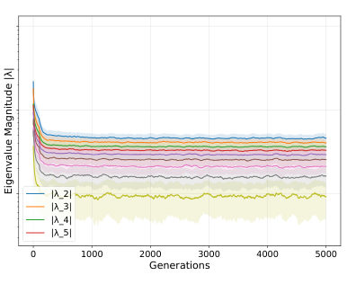
<figcaption class="paper-figure-caption"><b>Fig 1.</b> Figure 1: Eigenvalue magnitudes |λ2|, . . . , |λ5| of the reconstructed transition matrix across 5000 generations and 10 seeds, moving average (w=100), shaded region represents 25th to 75th percentile. Dashed lines mark the true spectrum of M0. Left: vanilla recursion. The subdominant eigenvalues climb toward 1 and the spectral gap narrows. Right: with Dreaming Learning (Td=1.5, α=0.8) the spectrum is flat in t. The dreaming spectrum stabilises below the true one, indicating a residual bias toward faster mixing that is controlled by Td and α.</figcaption>
</figure>
<figure class="paper-figure-card">
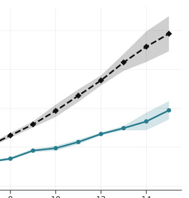
<figcaption class="paper-figure-caption"><b>Fig 2.</b> Figure 2: GPT-2 (124M) under the generate-and-retrain loop, with synthetic corpora sampled at Ts = 0.8. WikiText-2 validation perplexity against generation count, vanilla and dreaming (Td = 1.1, α = 0.5), over five seeds; shaded regions represent 25th to 75th percentile.</figcaption>
</figure>
<figure class="paper-figure-card">
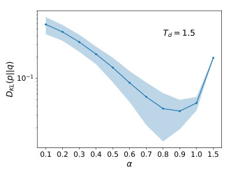
<figcaption class="paper-figure-caption"><b>Fig 3.</b> Figure 3: DKL(p∥q) between the true and reconstructed stationary distributions after 5000 generations over 10 seeds. Left: varying Td at α = 0.8. Right: varying α at Td = 1.5. VANILLA denotes no dreaming term. Shaded regions represent 25th to 75th percentile.</figcaption>
</figure>
<figure class="paper-figure-card">
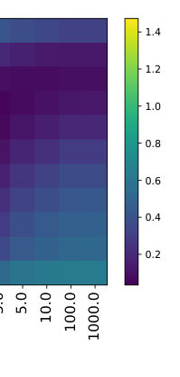
<figcaption class="paper-figure-caption"><b>Fig 4.</b> Figure 4: DKL between true and reconstructed stationary distributions after 5000 generations across the (Td, α) grid.</figcaption>
</figure>
<figure class="paper-figure-card">
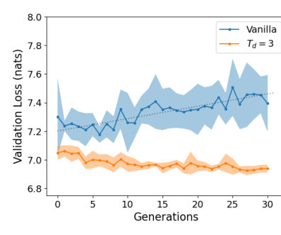
<figcaption class="paper-figure-caption"><b>Fig 5.</b> Figure 5: Left, right: LSTM validation loss against generation count for vanilla and dreaming (Td=3) models at Ts=0.7 and Ts=1 over 10 seeds each. Shaded region represents 25th to 75th percentile.</figcaption>
</figure>
</div>

<p><strong>Summary.</strong> This work analyzes model collapse in generative models, diagnosing the failure using the eigenvalue spectrum of the learned transition operator. The authors propose 'Dreaming Learning,' a regularization technique that stabilizes the model by incorporating high-temperature samples. This method successfully prevents the model from collapsing into a deterministic, low-diversity state, improving performance across various architectures.</p>
<p><strong>Why it may be interesting.</strong> The spectral analysis provides a rigorous, structural diagnostic tool (eigenvalue spectrum) to characterize the failure modes of complex, high-dimensional generative models, linking information geometry to dynamical system stability.</p>
<details>
<summary>Detailed structure</summary>
<p><strong>Main problem.</strong> The paper addresses model collapse, a phenomenon where generative models trained iteratively on their own synthetic data lose diversity and performance.</p>
<p><strong>Main result.</strong> The proposed 'Dreaming Learning' regularization, which incorporates samples drawn at a higher temperature, successfully mitigates model collapse by stabilizing the learned transition operator's spectrum.</p>
<p><strong>Method.</strong> The analysis uses spectral diagnostics by examining the eigenvalue spectrum of the learned transition operator in a controlled Markov setting, comparing vanilla self-training against the dreaming regularization.</p>
<p><strong>Model / system.</strong> The study applies to generative models, including Markov chains, LSTMs, and GPT-2, trained via self-retraining loops on synthetic data.</p>
<p><strong>Key observables.</strong> The subdominant eigenvalues of the transition operator, the spectral gap, and validation perplexity/KL divergence.</p>
<p><strong>Important parameters / regimes.</strong> Sampling temperatures ($T_s < 1$ for collapse, $T_d > 1$ for dreaming), and the regularization strength ($\alpha$).</p>
<p><strong>Assumptions / limitations.</strong> The analysis is initially framed in a controlled Markov setting, though results are extended to complex LLMs; it assumes the operator is recoverable.</p>
<p><strong>Figures summary.</strong> Figure 1 shows that vanilla training causes eigenvalues to approach 1 (collapse), while Dreaming Learning keeps the spectrum flat. Figure 2 compares perplexity, showing Dreaming Learning yields better performance than vanilla recursion.</p>
<p><strong>Paper structure.</strong> The paper first establishes the spectral signature of model collapse ($T_s < 1$) and then introduces Dreaming Learning ($T_d > 1$) as a regularization technique. It validates this mechanism using spectral analysis and empirical performance metrics across various model types.</p>
</details>
<details>
<summary>Abstract</summary>
<p>Training generative models on synthetic data causes loss of diversity and a decrease in performance, a phenomenon known as model collapse. We study this degeneration spectrally in a controlled Markov setting. The eigenvalue spectrum of the learned transition operator offers a direct view of the process, since the subdominant eigenvalues set how fast the chain mixes and therefore how much of the state space it continues to explore. We find that sampling at temperature $T_s < 1$ acts on the operator like repeated sharpening, pushing it toward a deterministic system: the subdominant eigenvalues approach the unit circle and the spectral gap narrows. When $T_s < 1$, even data accumulation does not appear to arrest this drift. We then analyze Dreaming Learning, a regulariser that, in parallel with regular training, adds a loss term on the model's own samples drawn at a raised temperature $T_d > 1$. Because high-temperature samples flatten the predicted distribution, training on them keeps the entries of the learned operator from becoming vanishingly small, which in turn keeps the eigenvalues bounded away from the unit circle. Measurements of the spectra over 5000 generations are consistent with this picture, and the mitigation effect persists in more complex settings such as LSTM language models and a 124M-parameter GPT-2.</p>
</details>
<p><sub><a href="#top">↑ back to top</a></sub></p>

<p><a id="paper-2610.29482"></a></p>
<h3 id="on-thermal-hall-effect-in-boson-systems"><a href="http://arxiv.org/abs/2610.29482v1">On thermal Hall effect in boson systems</a></h3>
<p><strong>Authors:</strong> Yu. V. Baramygina, D. N. Aristov<br>
<strong>Type:</strong> theory · <strong>Category:</strong> strongly correlated electrons · <strong>PDF:</strong> <a href="https://arxiv.org/pdf/2610.29482v1">https://arxiv.org/pdf/2610.29482v1</a><br>
<strong>Analysis basis:</strong> full PDF text, analyzed in chunks
<strong>Topic relevance:</strong> <code>Keldysh / 2PI / non-Gaussian methods</code> <strong>1/5</strong> · <code>analog quantum simulation</code> <strong>1/5</strong></p>
<div class="figure-strip-hint">↔ Scroll figures horizontally</div>
<div class="paper-figures-scroll">
<figure class="paper-figure-card">
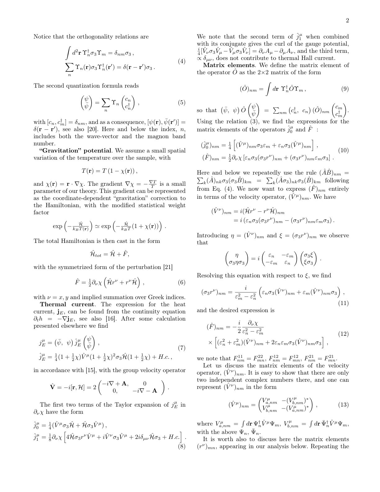
<figcaption class="paper-figure-caption"><b>Fig 1.</b> Low-resolution page preview, page 2</figcaption>
</figure>
<figure class="paper-figure-card">
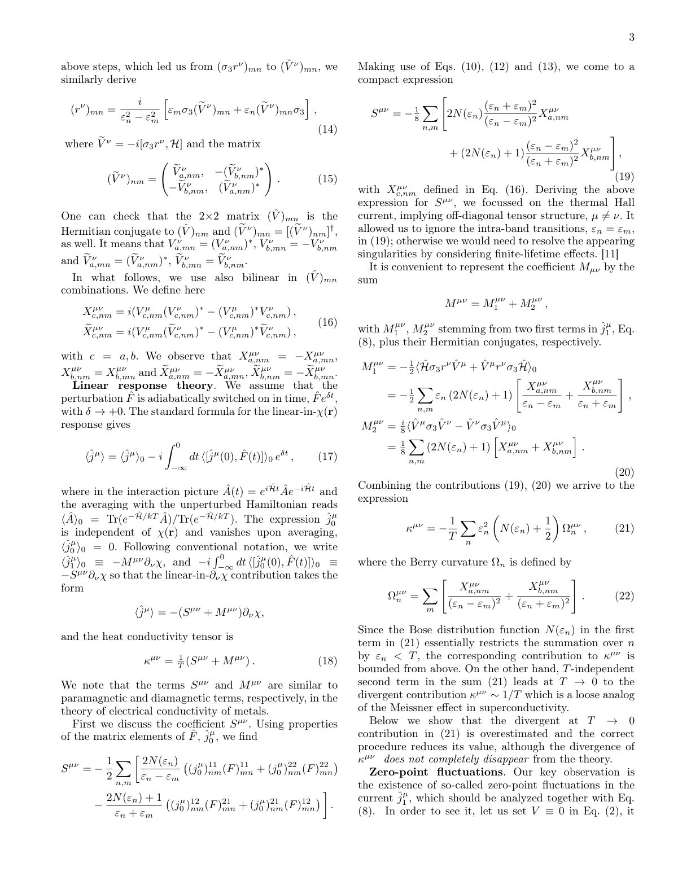
<figcaption class="paper-figure-caption"><b>Fig 2.</b> Low-resolution page preview, page 3</figcaption>
</figure>
<figure class="paper-figure-card">
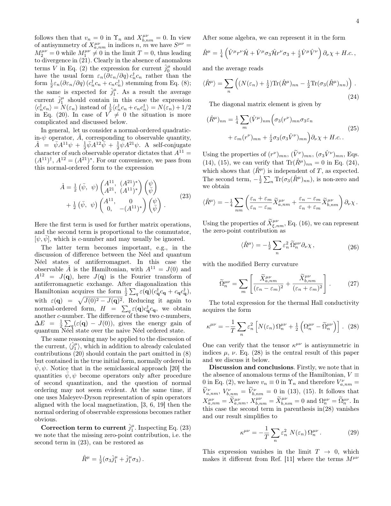
<figcaption class="paper-figure-caption"><b>Fig 3.</b> Low-resolution page preview, page 4</figcaption>
</figure>
<figure class="paper-figure-card">
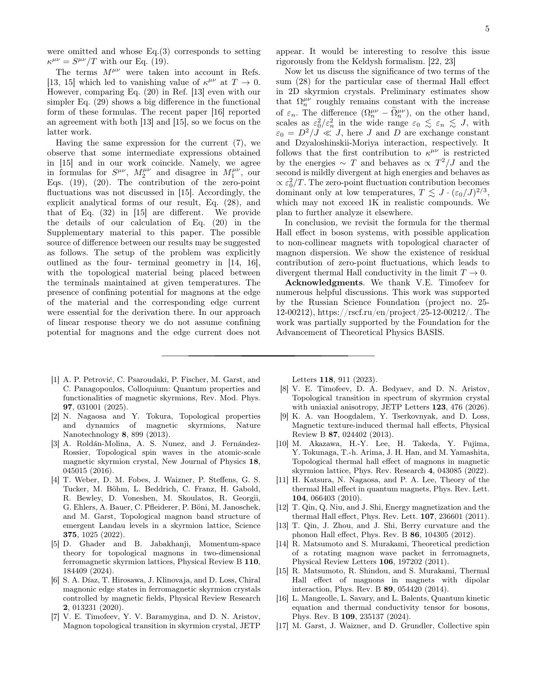
<figcaption class="paper-figure-caption"><b>Fig 4.</b> Low-resolution page preview, page 5</figcaption>
</figure>
<figure class="paper-figure-card">

<figcaption class="paper-figure-caption"><b>Fig 5.</b> Low-resolution page preview, page 6</figcaption>
</figure>
</div>

<p><strong>Summary.</strong> This theoretical work investigates the thermal Hall effect in boson systems relevant to skyrmion crystal magnets. By rederiving the thermal Hall conductivity, the authors highlight a finite, temperature-dependent residual contribution at low temperatures. This provides a potential experimental diagnostic tool to confirm topological transitions in these magnetic materials.</p>
<p><strong>Why it may be interesting.</strong> The detailed analysis of topological effects (Berry curvature) and transport phenomena (THE) in magnetic insulators connects concepts from condensed matter theory to observable signatures in quantum materials.</p>
<details>
<summary>Detailed structure</summary>
<p><strong>Main problem.</strong> The paper theoretically discusses the thermal Hall effect (THE) in boson systems, aiming to apply these findings to magnetically ordered insulators exhibiting a skyrmion lattice ground state.</p>
<p><strong>Main result.</strong> The authors rederive formulas for the thermal Hall conductivity, finding a residual 1/T contribution at low temperatures due to anomalous terms in the magnon Hamiltonian, which resembles the Meissner effect.</p>
<p><strong>Method.</strong> The analysis uses linear response theory applied to a perturbation in the magnon Hamiltonian, involving the calculation of matrix elements and the inclusion of zero-point fluctuations.</p>
<p><strong>Model / system.</strong> The system modeled is a boson system, specifically considering magnon excitations over the ground state of a Skyrmion Crystal (SkX). The physics is governed by a Bogoliubov-de Gennes type Hamiltonian.</p>
<p><strong>Key observables.</strong> Thermal Hall conductivity tensor (kappa_mu nu), Berry curvature (Omega^n_mu nu), and the thermal Hall effect (THE).</p>
<p><strong>Important parameters / regimes.</strong> Low temperatures (T -&gt; 0), magnetic field variation, and the presence of anomalous terms in the magnon Hamiltonian.</p>
<p><strong>Assumptions / limitations.</strong> The analysis assumes the perturbation is adiabatically switched on and initially neglects finite width geometry and edge currents compared to previous works.</p>
<p><strong>Paper structure.</strong> The paper systematically derives the thermal Hall conductivity using linear response theory, first establishing the general formula, then incorporating zero-point fluctuation corrections, and finally analyzing the low-temperature behavior and the role of anomalous terms.</p>
</details>
<details>
<summary>Abstract</summary>
<p>We theoretically discuss the thermal Hall effect (THE) in boson systems keeping in mind possible applications to magnetically ordered insulators with skyrmion lattice ground state. The magnon spectrum of such systems may undergo a topological transition upon the variation of magnetic field, and THE could be a tool to confirm this phenomenon. We rederive formulas, suitable for our purposes, and find expressions which have a different temperature dependence of THE as compared to previously reported results. Particularly, in presence of anomalous terms in magnon Hamiltonian the thermal Hall conductivity has a small but finite residual 1/T contribution. Such contribution may become sizable at very low temperatures and resembles Meissner effect in superconducting metals.</p>
</details>
<p><sub><a href="#top">↑ back to top</a></sub></p>

<p><a id="paper-2610.29422"></a></p>
<h3 id="photon-correlations-control-quantum-fisher-information-in-coherent-multidimensional-spectroscopy"><a href="http://arxiv.org/abs/2610.29422v1">Photon Correlations Control Quantum Fisher Information in Coherent Multidimensional Spectroscopy</a></h3>
<p><strong>Authors:</strong> Chenghong Huang, Yuta Fujihashi, Akihito Ishizaki<br>
<strong>Type:</strong> theory · <strong>Category:</strong> other · <strong>PDF:</strong> <a href="https://arxiv.org/pdf/2610.29422v1">https://arxiv.org/pdf/2610.29422v1</a><br>
<strong>Analysis basis:</strong> full PDF text, analyzed in chunks
<strong>Topic relevance:</strong> <code>interference shaping light</code> <strong>1/5</strong> · <code>quantum measurements</code> <strong>1/5</strong></p>
<div class="figure-strip-hint">↔ Scroll figures horizontally</div>
<div class="paper-figures-scroll">
<figure class="paper-figure-card">

<figcaption class="paper-figure-caption"><b>Fig 1.</b> FIG. 1. Interaction-selected correlations and eigenvector quantum Fisher information for matched excitation sources at ¯n = 1. (a) Waiting-time dependence of Fvec for the downhill population-transfer rate k12 under coherent, two- mode squeezed vacuum (TMSV), and independent displaced squeezed excitation. All curves are normalized by the maxi- mum coherent state value. (b) Eigenvector QFI ratio Rvec for eight molecular parameters at τ2 = 100 fs. Symbols represent numerical results, lines indicate the leading-order prediction of Eqs. (18) and (21). The gray dotted line denotes the co- herent reference, Rvec = 1.</figcaption>
</figure>
<figure class="paper-figure-card">

<figcaption class="paper-figure-caption"><b>Fig 2.</b> FIG. 2. Normally ordered information law and total quantum Fisher information (QFI) bound for matched excitation sources at ¯n = 1 and τ2 = 100 fs. Red and green symbols represent two-mode squeezed vacuum (TMSV) and independent displaced squeezed excitation, respectively. The latter has nsq/n = 0.5. (a) Normally ordered QFI ratio RN as a function of the phase- encoded fraction sin2 χ for eight molecular parameters. Solid lines indicate Eq. (14), and symbols represent numerical results. (b) Total QFI ratio RQ versus the upper bound U defined in Eq. (26). The gray diagonal denotes RQ = U. (c) Relative reduction from the upper bound, 100(1 −RQ/U)%, for the same molecular parameters.</figcaption>
</figure>
<figure class="paper-figure-card">

<figcaption class="paper-figure-caption"><b>Fig 3.</b> Figure 3(a,b) shows the QFI decomposition at τ2 = 100 fs for two parameters with contrasting encoding char- acteristics: the predominantly amplitude-encoded trans- fer rate k12 and the more strongly phase-encoded elec- tronic coupling J. For both parameters, the fraction Fvec decreases and Fval increases with increasing squeez- ing. However, the total QFI responds differently. For the predominantly amplitude-encoded transfer rate k12 [Fig. 3(a)], the reduction of Fvec is accompanied by a cor- responding increase in Fval, leaving the total QFI nearly unchanged. For the more strongly phase-encoded elec- tronic coupling J [Fig. 3(b)], the increase in Fval is insuf- ficient to offset the loss...</figcaption>
</figure>
<figure class="paper-figure-card">

<figcaption class="paper-figure-caption"><b>Fig 4.</b> FIG. 3. Information redistribution under independent displaced squeezing at ¯n = 1 and τ2 = 100 fs. (a, b) Eigenvector and eigenvalue quantum Fisher information (QFI) contributions normalized by the total coherent reference QFI for (a) the population transfer rate k12 and (b) the electronic coupling J. Shaded regions indicate the two contributions; their sum gives the total QFI ratio RQ. Symbols denote the numerical results and dashed curves the leading-order predictions. The horizontal dotted line indicates the coherent reference, RQ = 1. (c) Eigenvector ratio Rvec for k12 and J. The solid curve represents the source only prediction of Eq. (21).</figcaption>
</figure>
<figure class="paper-figure-card">

<figcaption class="paper-figure-caption"><b>Fig 5.</b> FIG. 4. Brightness dependence of the normally ordered in- formation and total quantum Fisher information (QFI) for estimation of the population transfer rate at τ2 = 100 fs. Red and blue curves represent two-mode squeezed vacuum (TMSV) and coherent excitation, with matched mean pho- ton number ¯n = 2n. Solid curves with symbols show the total QFI FQ, while dashed curves represent the normally ordered information FN. All values are normalized by the coherent reference total QFI at ¯n = 1.</figcaption>
</figure>
</div>

<p><strong>Summary.</strong> This theoretical work analyzes how quantum light correlations, specifically photon-number correlations and two-photon coherence, enhance the precision of molecular parameter estimation in multidimensional spectroscopy. By deriving information laws, the authors show that using two-mode squeezed vacuum significantly boosts the Quantum Fisher Information compared to standard coherent light. This guides experimentalists on selecting optimal quantum light sources for advanced spectroscopic measurements.</p>
<p><strong>Why it may be interesting.</strong> This work provides concrete, quantitative criteria for designing quantum light sources to maximize parameter estimation precision in spectroscopic measurements, directly linking quantum optics to molecular dynamics.</p>
<details>
<summary>Detailed structure</summary>
<p><strong>Main problem.</strong> The paper investigates how photon-number correlations and two-photon coherence, encoded in the excitation light, control the precision (Quantum Fisher Information, QFI) of molecular parameter estimation from the emitted rephasing signal.</p>
<p><strong>Main result.</strong> Two-mode squeezed vacuum enhances both amplitude and phase sensitivities of the QFI relative to coherent excitation, while the total QFI cannot be determined solely from the coherent mean-field signal due to background population effects.</p>
<p><strong>Method.</strong> The QFI is calculated using the Symmetric Logarithmic Derivative (SLD) approach in the weak-emission regime, deriving information laws that separate contributions from photon correlations and molecular coherence.</p>
<p><strong>Model / system.</strong> The study models coherent multidimensional spectroscopy, focusing on the rephasing signal from molecular systems (like an exciton dimer) interacting with quantum light sources (coherent, TMSV, or squeezed vacuum).</p>
<p><strong>Key observables.</strong> Quantum Fisher Information ($F_Q$), amplitude sensitivity (related to joint photon-number moment), and phase sensitivity (related to two-photon coherence).</p>
<p><strong>Important parameters / regimes.</strong> Weak-emission regime, single Schmidt pair approximation, and the specific type of excitation source (e.g., TMSV vs. coherent).</p>
<p><strong>Assumptions / limitations.</strong> The analysis relies on the single Schmidt pair approximation and the weak-emission expansion ($\epsilon 	o 0$).</p>
<p><strong>Figures summary.</strong> Figures illustrate the waiting time dependence of the eigenvector QFI and the ratio of total QFI to its upper bound, comparing coherent, TMSV, and squeezed excitation sources.</p>
<p><strong>Paper structure.</strong> The paper develops information laws for the QFI, derives expressions for the normally ordered information, and compares the enhancement factors achieved by different quantum light sources (TMSV vs. coherent) for estimating molecular parameters.</p>
</details>
<details>
<summary>Abstract</summary>
<p>Coherent multidimensional spectroscopy probes interactions and dynamics of molecular systems through nonlinear optical signals. Quantum light excitation has been explored as a means of controlling these signals, raising the question of how excitation-light correlations affect the precision of molecular parameter estimation from the emitted signal. In this work, we show that photon-number correlations and two-photon coherence play distinct roles in encoding molecular information in the emitted rephasing signal. In the weak-emission regime and within the single Schmidt pair approximation, we derive a normally ordered information law in which the joint photon-number moment and the squared magnitude of the two-photon coherence weight the amplitude and phase sensitivities of the molecular response, respectively. For matched temporal modes and mean photon numbers in each input mode, two-mode squeezed vacuum enhances both weights relative to coherent excitation, whereas independent displaced squeezing preserves the amplitude weight but reduces the phase weight. The background population and its parameter dependence also affect the total quantum Fisher information, which therefore cannot be inferred from the coherent mean-field signal alone. We derive a leading-order bound on its enhancement over coherent excitation when the background population is nonnegative and common to the compared sources. These findings provide criteria for selecting excitation sources according to how the target molecular parameter affects the amplitude and phase of the response.</p>
</details>
<p><sub><a href="#top">↑ back to top</a></sub></p>

<p><a id="paper-2610.28845"></a></p>
<h3 id="pushing-beyond-the-memory-barrier-in-propagation-algorithms-with-randomization"><a href="http://arxiv.org/abs/2610.28845v1">Pushing beyond the memory barrier in propagation algorithms with randomization</a></h3>
<p><strong>Authors:</strong> Manuel S. Rudolph, Ricard Puig, Slimane Thabet, Zoë Holmes<br>
<strong>Type:</strong> theory · <strong>Category:</strong> numerical methods · <strong>PDF:</strong> <a href="https://arxiv.org/pdf/2610.28845v1">https://arxiv.org/pdf/2610.28845v1</a><br>
<strong>Analysis basis:</strong> full PDF text, analyzed in chunks
<strong>Topic relevance:</strong> <code>analog quantum simulation</code> <strong>1/5</strong> · <code>methods for driven-dissipative</code> <strong>1/5</strong></p>
<div class="figure-strip-hint">↔ Scroll figures horizontally</div>
<div class="paper-figures-scroll">
<figure class="paper-figure-card">

<figcaption class="paper-figure-caption"><b>Fig 1.</b> FIG. 1. Randomized propagation reproduces deter- ministic calculations that use up to two orders of mag- nitude more memory. The horizontal dashed lines show deterministic calculations and report their final memory us- age relative to the memory used in our randomized simulation. A carefully chosen bias allows the randomized calculation to reach the accuracy of deterministic calculations requiring one or two orders of magnitude more memory.</figcaption>
</figure>
<figure class="paper-figure-card">

<figcaption class="paper-figure-caption"><b>Fig 2.</b> FIG. 2. Schematic depiction of comb resampling and Monte Carlo Pauli propagation. Given a Pauli sum O = ∑ NO i=1 ciPi with arbitrary coefficients ci, their magnitudes ∣ci∣divided by the coefficient 1-norm W = ∑ NO i=1 ∣ci∣define a distribution that can be sampled to reduce the number of Pauli strings that are stored in memory from NO to approximately m. Comb resampling distributes W/∆teeth with spacing ∆over the distribution with a random offset in [0, ∆), and the number of teeth landing within each coefficient’s magnitude interval determines the number of times it is drawn with coefficient sign(ci)∆. During propagation, once we surpass M strings, we can resample to small or large sizes m,...</figcaption>
</figure>
<figure class="paper-figure-card">

<figcaption class="paper-figure-caption"><b>Fig 3.</b> FIG. 3. Estimator standard deviation as a function of the memory budget M after L = 3, 5, and 7 circuit layers. At L = 3 and L = 5, comb resampling with merging shows an apparent O(M −1) scaling, while path sampling, one-norm resampling, and comb resampling without merging remain closer to the usual O(M −1/2) behaviour. By L = 7 the engineered method still performs best, but its scaling advantage has begun to narrow as the coefficient distribution becomes more scrambled.</figcaption>
</figure>
<figure class="paper-figure-card">

<figcaption class="paper-figure-caption"><b>Fig 4.</b> Figure 3 and the above discussion concern the unbiased case. That is, one idea would be to continue with unbi- ased randomized propagation once conventional propa- gation hits the memory limit. However, we have found that injecting a controlled bias into the randomized prop- agation is absolutely central for achieving practical im- provements over state-of-the-art deterministic propaga- tion. In particular, if we do not truncate in-between the unbiased resampling events, the algorithm quickly accu- mulates a prohibitive variance. On the other hand, a carefully chosen threshold just below the target accuracy can delay this onset substantially. Interestingly, truncat- ing small coefficients...</figcaption>
</figure>
<figure class="paper-figure-card">

<figcaption class="paper-figure-caption"><b>Fig 5.</b> FIG. 4. Performance of Monte Carlo Pauli propaga- tion on a CPU node. For a Pauli-Z observable evolved un- der a Trotterized 6×6 TFIM Hamiltonian, we observe that our implementation in PauliPropagation.jl can apply a Pauli rotation and resample 109 Pauli strings in approximately 1 second using 64 threads. We achieve a speedup of approxi- mately 20× from 1 to 64 threads as we approach the limit set by the memory bandwidth of the node.</figcaption>
</figure>
</div>

<p><strong>Summary.</strong> This paper introduces a novel randomized protocol to overcome the memory limitations inherent in Pauli propagation algorithms used for simulating quantum circuits. By implementing specialized resampling, merging, and controlled biasing, the method keeps the computational state within a fixed memory budget. This allows researchers to simulate deep quantum circuits with vastly reduced memory overhead while maintaining high accuracy.</p>
<p><strong>Why it may be interesting.</strong> This work provides a crucial computational tool for simulating complex quantum dynamics that would otherwise be intractable due to memory constraints, directly impacting the feasibility of benchmarking quantum hardware.</p>
<details>
<summary>Detailed structure</summary>
<p><strong>Main problem.</strong> Pauli propagation algorithms for simulating quantum circuits encounter a memory barrier due to the exponential growth of Pauli strings in deep circuits.</p>
<p><strong>Main result.</strong> A randomized protocol combining resampling, merging, and controlled bias allows the simulation to reproduce deterministic results while requiring orders of magnitude less memory.</p>
<p><strong>Method.</strong> The authors propose a randomized protocol that treats memory as a tunable hyperparameter, using specialized resampling schedules and controlled biasing to keep the Pauli sum within a fixed memory budget.</p>
<p><strong>Model / system.</strong> The work focuses on simulating quantum circuits by tracking the Pauli basis expansion of observables, often applied to systems like the transverse-field Ising model.</p>
<p><strong>Key observables.</strong> Memory Usage (number of Pauli strings), Statistical Error/Variance, Estimator Standard Deviation.</p>
<p><strong>Important parameters / regimes.</strong> Memory Budget (M), Circuit Depth (L), Bias strength ($\epsilon_{	ext{rel}}$).</p>
<p><strong>Assumptions / limitations.</strong> The success relies on the strong coupling between the sampling strategy, compression strength, and merging, and the ability to average results over many independent repetitions.</p>
<p><strong>Figures summary.</strong> Figures illustrate that randomized propagation can match deterministic results using significantly less memory, and compare the scaling of estimator standard deviation for different resampling strategies.</p>
<p><strong>Paper structure.</strong> The paper develops the randomized protocol, analyzes the scaling of the Mean Squared Error (MSE) using occupancy models, and compares the performance of various biasing and resampling techniques.</p>
</details>
<details>
<summary>Abstract</summary>
<p>Performant classical tools for simulating quantum circuits are important for benchmarking and supporting upcoming quantum devices. Pauli propagation offers promising capabilities, but deep circuits usually cause a rapid growth in the number of Pauli strings and can quickly exhaust the available memory. In this work, we introduce a randomized protocol that combines a specialized resampling schedule, merging, and a controlled amount of bias to keep the propagating Pauli sum within any prescribed memory budget. Additional computational resources can then be spent on embarrassingly parallel repetitions that systematically improve the estimate. Building on the open-source library PauliPropagation.jl, we show that 1) increasing memory of each simulation reduces the error systematically more than outside averaging, 2) resampling just enough to apply the next gate delays variance accumulation and gives better error-per-time trade-offs than more aggressive resampling, and 3) a small, controlled bias is crucial in cutting down variance and pushing far beyond unbiased randomization. The resulting framework can reproduce deterministic calculations while requiring several orders of magnitude less memory.</p>
</details>
<p><sub><a href="#top">↑ back to top</a></sub></p>

<p><a id="paper-2610.29366"></a></p>
<h3 id="hybridization-induced-enhancement-of-the-thermoelectric-response-in-the-kagome-material-cscrmath573mathsbmath574math"><a href="http://arxiv.org/abs/2610.29366v1">Hybridization-Induced Enhancement of the Thermoelectric Response in the Kagome Material CsCr$_6$Sb$_6$</a></h3>
<p><strong>Authors:</strong> Hongye Zhang, Boqin Song, Aifeng Wang, Yisheng Chai, Xiaoyuan Zhou, Ying Zhu, Tianping Ying, Mingquan He<br>
<strong>Type:</strong> experiment · <strong>Category:</strong> strongly correlated electrons · <strong>PDF:</strong> <a href="https://arxiv.org/pdf/2610.29366v1">https://arxiv.org/pdf/2610.29366v1</a><br>
<strong>Analysis basis:</strong> full PDF text, analyzed in chunks
<strong>Topic relevance:</strong> <code>analog quantum simulation</code> <strong>1/5</strong></p>
<div class="figure-strip-hint">↔ Scroll figures horizontally</div>
<div class="paper-figures-scroll">
<figure class="paper-figure-card">

<figcaption class="paper-figure-caption"><b>Fig 1.</b> FIG. 1. (a) Side view of the crystal structure of CsCr6Sb6. (b) Top view of the Cr double-kagome layer along the c axis. (c) Temperature dependence of the longitudinal electrical resistivity ρxx measured at zero magnetic field. The red curve is a fit to ρxx = ρ0 + AT + ρK, where the Kondo contribution ρK is described by the modified Hamann expression in Eq. (1). The upper-right inset shows the nearly linear temperature dependence of ρxx between 100 and 200 K. The lower-left inset highlights the −T 2 dependence of ρxx at low temperatures. (d) Hall resistivity ρyx as a function of magnetic field at selected temperatures. (e),(f) Temperature dependence of the apparent carrier density and...</figcaption>
</figure>
<figure class="paper-figure-card">

<figcaption class="paper-figure-caption"><b>Fig 2.</b> FIG. 2. (a) Temperature dependence of the Seebeck coefficient Sxx of CsCr6Sb6 measured at 0 and 9 T. The heat current JQ was applied within the ab plane, and the magnetic field was directed along the c axis. Blue circles show the calculated conventional diffusion contribution SN0 without correlation-induced mass renormalization. The inset shows the temperature derivative dSxx/dT. (b) Temperature dependence of the specific heat Cp. The inset shows the low-temperature specific heat plotted as Cp/T versus T 2. (c) Temperature dependence of the total thermal conductivity κxx (black solid circles), phonon thermal conductivity κph (blue open circles), and electronic thermal conductivity κel (red...</figcaption>
</figure>
<figure class="paper-figure-card">

<figcaption class="paper-figure-caption"><b>Fig 3.</b> FIG. 3. (a) Magnetic-field dependence of the Nernst signal Syx at selected temperatures. (b) Temperature dependence of Syx measured at 9 T. The semiclassical Ssc yx estimated from Eq. 4 using the temperature-dependent mobility and Fermi energy is shown for comparison. (c) Semiclassical scaling of ν/T with µ/EF for various materials [30, 31], where ν = Syx/B. The red solid line represents Eq. 4, while the purple star denotes CsCr6Sb6 at 20 K, using EF/kB ∼36 K. (d) Universal scaling of the Nernst coefficient according to Eq. 5 (red solid line), compared with various prototypical heavy-fermion compounds [30, 55–61].</figcaption>
</figure>
</div>

<p><strong>Summary.</strong> This experimental work measures the thermoelectric response of the Kagome compound CsCr6Sb6, which exhibits flat bands due to hybridization. The measurements show that the Seebeck and Nernst signals are significantly enhanced by this hybridization, confirming the material's utility as a platform to study Kondo physics driven by flat bands.</p>
<p><strong>Why it may be interesting.</strong> The strong correlation between hybridization, magnetic correlations, and transport properties in a geometrically frustrated lattice like the Kagome structure provides a rich playground for studying emergent quantum phenomena relevant to strongly correlated electron theory.</p>
<details>
<summary>Detailed structure</summary>
<p><strong>Main problem.</strong> To investigate the hybridization-induced enhancement of the thermoelectric response in the Kagome material CsCr6Sb6.</p>
<p><strong>Main result.</strong> The study reveals a hybridization-induced enhancement of the thermoelectric response, establishing CsCr6Sb6 as a promising Kagome platform for probing flat-band-derived Kondo physics via transport measurements.</p>
<p><strong>Method.</strong> Charge and thermal transport measurements (resistivity, Seebeck coefficient, Nernst signal) were performed on single crystals using a Physical Property Measurement System (PPMS).</p>
<p><strong>Model / system.</strong> The system is CsCr6Sb6, a Kagome Kondo material where electronic states near the Fermi level are governed by the hybridization between flat bands and dispersive itinerant bands.</p>
<p><strong>Key observables.</strong> Seebeck coefficient (Sxx), Nernst signal (Syx), longitudinal resistivity (rho_xx), and thermal conductivity (kappa).</p>
<p><strong>Important parameters / regimes.</strong> Characteristic temperatures include the Kondo temperature (T_K = 15 K), the coherence temperature (T_F ~ 70 K), and the observed extrema temperature (T_p ~ 20-25 K).</p>
<p><strong>Assumptions / limitations.</strong> The analysis employs phenomenological models, such as decomposing resistivity into normal and Kondo contributions, and considering phonon drag contributions to the Seebeck effect.</p>
<p><strong>Figures summary.</strong> Figures show the crystal structure, resistivity vs. temperature (with Kondo fitting), Hall resistivity vs. field/temperature, and measurements of the Seebeck and Nernst signals across various temperature ranges.</p>
<p><strong>Paper structure.</strong> The paper presents experimental measurements of transport properties, analyzes the temperature dependence of the Seebeck and Nernst coefficients relative to characteristic energy scales (T_F, T_K), and discusses the implications of these findings for flat-band Kondo physics.</p>
</details>
<details>
<summary>Abstract</summary>
<p>Flat bands in kagome lattices provide a prominent route to strongly correlated electronic states. Here we report charge and thermal transport measurements on single crystals of CsCr$_6$Sb$_6$, a kagome Kondo system arising from the hybridization between flat and dispersive bands. The Seebeck coefficient and Nernst signal increase rapidly below $T_\mathrm{F}\sim70$ K, concomitant with the emergence of short-range antiferromagnetic correlations and flat-band resonance. The Nernst coefficient in the intermediate-temperature range of $\sim30-80$ K further follows the universal scaling reported for prototypical heavy-fermion compounds, consistent with the development of strongly renormalized quasiparticles associated with hybridization. Both the Seebeck and Nernst responses reach extrema at a lower temperature $T_\mathrm{p}\sim20-25$ K, where phonon drag and correlated quasiparticles may both contribute. These results reveal a hybridization-induced enhancement of the thermoelectric response and establish CsCr$_6$Sb$_6$ as a kagome platform for probing flat-band-derived Kondo physics through thermoelectric transport.</p>
</details>
<p><sub><a href="#top">↑ back to top</a></sub></p>

<p><a id="paper-2610.29980"></a></p>
<h3 id="international-atomic-clock-comparison-achieving-math582math-uncertainty"><a href="http://arxiv.org/abs/2610.29980v1">International atomic clock comparison achieving $5\times 10^{-18}$ uncertainty</a></h3>
<p><strong>Authors:</strong> A. Tofful, M. Filzinger, T. Schmidt, A. Amy-Klein, E. Benkler, E. Cantin, C. Chardonnet, E. A. Curtis, H. Denker, B. Dutta, J. -O. Gaudron, W. Huang, J. Kronjäger, A. Kuhl, R. Le Targat, B. Lipphardt, O. Lopez, S. Mukherjee, A. L. Parke, B. Pointard, P. -E. Pottie, P. J. Regan, M. Risaro, M. Schioppo, M. Steinel, J. Tunesi, X. Zhang, R. M. Godun, N. Huntemann<br>
<strong>Type:</strong> experiment · <strong>Category:</strong> other · <strong>PDF:</strong> <a href="https://arxiv.org/pdf/2610.29980v1">https://arxiv.org/pdf/2610.29980v1</a><br>
<strong>Analysis basis:</strong> full PDF text, analyzed in chunks
<strong>Topic relevance:</strong> <code>QC/QI experiment</code> <strong>1/5</strong></p>
<div class="figure-strip-hint">↔ Scroll figures horizontally</div>
<div class="paper-figures-scroll">
<figure class="paper-figure-card">

<figcaption class="paper-figure-caption"><b>Fig 1.</b> FIG. 1. Map indicating the locations of the two optical clocks at NPL, UK, and PTB, Germany, and their connection via a 2220 km long fiber link with three nodes in France at Lab- oratoire de Physique des Lasers (LPL), Laboratoire Temps Espace (LTE), and the University of Strasbourg (UoS). In- sets show the different geometries of the respective single-ion trap electrodes.</figcaption>
</figure>
<figure class="paper-figure-card">

<figcaption class="paper-figure-caption"><b>Fig 2.</b> FIG. 2. Frequency ratio measurements between νYb+ of the 2S1/2(F = 0) ↔2F7/2(F = 3) transition in 171Yb+ as real- ized independently at PTB and NPL. Each point represents an average over an individual day, and error bars correspond to the one-sigma statistical uncertainties, assuming white fre- quency noise. We find χ2 red ≈1.2. The red line corresponds to the average of all measurements, the pink shaded area depicts the statistical uncertainty of 1.6 × 10−18 and the grey shaded area corresponds to the overall uncertainty of 4.8 × 10−18.</figcaption>
</figure>
<figure class="paper-figure-card">

<figcaption class="paper-figure-caption"><b>Fig 3.</b> FIG. 3. Measurement instability as characterized by the over- lapping Allan deviation. The solid line indicates the 1/√τ- scaling expected for white frequency noise. An instability of 1.67 × 10−15/ p</figcaption>
</figure>
<figure class="paper-figure-card">

<figcaption class="paper-figure-caption"><b>Fig 4.</b> FIG. 4. (a) Distribution of the 1-second frequency-ratio samples (gray bars) with a Gaussian fit (red line); the lower panel shows the residuals (data −fit), red and blue marking bins where the data lie above and below the fit. (b) The same samples versus time of day (a random subsample of 30 000 of the 1.09 × 106 samples is shown), with the central 99.5 % envelope per hour (red); the shaded regions mark daytime (06:00–18:00 UTC) and nighttime. The distribution is broader during the day than at night by a factor of 1.24.</figcaption>
</figure>
<figure class="paper-figure-card">

<figcaption class="paper-figure-caption"><b>Fig 5.</b> FIG. 5. Influence of the non-Gaussian distribution on the statistical uncertainty, shown for the 1000 s averages of the data. (a) Distribution of consecutive 1000 s averages of the measured frequency-ratio samples (gray) with a Gaussian fit (red). The lower panel shows the residuals (data −fit). The averages retain an excess kurtosis of γ2 = 1.0(7), caused by the changes in variance of the fiber-link noise throughout the day. Their skewness of γ1 = −0.14(18) is consistent with zero, and their standard deviation of 5.14(14) × 10−17 agrees with the white-noise expectation of 1.67 × 10−15/ √</figcaption>
</figure>
</div>

<p><strong>Summary.</strong> Researchers compared two state-of-the-art single-ion optical clocks over a long-distance fiber link, achieving an unprecedented frequency stability of $10^{-18}$. This milestone not only advances the goal of redefining the SI second but also allows for highly sensitive tests of fundamental physics, constraining potential violations of Lorentz invariance.</p>
<p><strong>Why it may be interesting.</strong> This work represents the pinnacle of precision measurement in AMO physics, pushing the limits of timekeeping and providing stringent tests of fundamental symmetries using trapped ions.</p>
<details>
<summary>Detailed structure</summary>
<p><strong>Main problem.</strong> To achieve the highest possible precision in international atomic clock comparisons and test fundamental physics symmetries like Lorentz invariance.</p>
<p><strong>Main result.</strong> The comparison achieved a fractional frequency uncertainty of $1.0(4.8) 	imes 10^{-18}$, setting a new benchmark for international clock comparisons. They also significantly improved constraints on Lorentz violation parameters.</p>
<p><strong>Method.</strong> Remote comparison of two single-ion optical clocks using a long-baseline optical fiber link, combined with rigorous systematic error analysis.</p>
<p><strong>Model / system.</strong> The system involves two single-ion optical clocks based on the electric octupole (E3) transition in the ${}^{171}	ext{Yb}^+$ ion. The comparison is performed over a $2220 	ext{ km}$ fiber link, requiring careful correction for relativistic redshift differences.</p>
<p><strong>Key observables.</strong> Fractional frequency difference ($
u_{ ext{PTB}}/
u_{ ext{NPL}}$), Allan deviation ($\sigma_y(   au)$), and modulation signals related to Lorentz violation ($\alpha$) and the Standard-Model Extension ($\xi - eta$).</p>
<p><strong>Important parameters / regimes.</strong> Target uncertainty below $5 	imes 10^{-18}$; improved constraints on the Robertson-Mansouri-Sexl parameter $\alpha$ by a factor of $\sim 5$.</p>
<p><strong>Assumptions / limitations.</strong> The measurement uncertainty is dominated by the relativistic redshift correction between the two sites. Statistical analysis assumes white-frequency-noise scaling for averaging.</p>
<p><strong>Figures summary.</strong> Figures show the geographical setup, the time evolution of the frequency ratio measurements, and statistical analyses of the data distribution (e.g., skewness and kurtosis) to validate the noise model.</p>
<p><strong>Paper structure.</strong> The paper details the experimental setup, presents the primary measurement of the frequency ratio, analyzes systematic corrections (especially relativistic effects), tests for fundamental symmetries (Lorentz violation), and concludes with statistical validation of the noise model.</p>
</details>
<details>
<summary>Abstract</summary>
<p>Two single-ion optical clocks, located in the United Kingdom and in Germany, are compared remotely via a 2220\,km long optical fiber link. Both clocks are based on the ${}^2S_{1/2} (F=0)\leftrightarrow {}^2F_{7/2} (F=3)$ electric octupole (E3) transition in $^{171}\text{Yb}^+$. Using more than $10^6$ seconds of measurement data, we determine a fractional frequency difference of $1.0(4.8)\times 10^{-18}$, demonstrating agreement of the independently developed systems. To our knowledge, this constitutes the first international clock comparison reaching a fractional uncertainty below $5\times 10^{-18}$, an important milestone towards an anticipated optical redefinition of the SI second. The measurement uncertainty is dominated by that of the relativistic redshift correction between the two sites, which includes time-varying gravity potential differences. We exploit the large baseline between the two clocks to search for violations of Lorentz invariance. In the absence of statistically significant modulations, we improve constraints on the Robertson-Mansouri-Sexl parameter $α$ by approximately a factor of five in the uncertainty, and provide limits on corresponding parameters within the Standard-Model Extension framework.</p>
</details>
<p><sub><a href="#top">↑ back to top</a></sub></p>

<p><a id="paper-2610.29729"></a></p>
<h3 id="intertwined-complex-orbital-order-and-ferrimagnetism-in-honeycomb-molybdate-femath599mathmomath600mathomath601math"><a href="http://arxiv.org/abs/2610.29729v1">Intertwined complex orbital order and ferrimagnetism in honeycomb molybdate Fe$_2$Mo$_3$O$_8$</a></h3>
<p><strong>Authors:</strong> Hong-Hao Song, Gang v. Chen<br>
<strong>Type:</strong> theory · <strong>Category:</strong> strongly correlated electrons · <strong>PDF:</strong> <a href="https://arxiv.org/pdf/2610.29729v1">https://arxiv.org/pdf/2610.29729v1</a><br>
<strong>Analysis basis:</strong> full PDF text, analyzed in chunks
<strong>Topic relevance:</strong> <code>analog quantum simulation</code> <strong>1/5</strong></p>
<div class="figure-strip-hint">↔ Scroll figures horizontally</div>
<div class="paper-figures-scroll">
<figure class="paper-figure-card">

<figcaption class="paper-figure-caption"><b>Fig 1.</b> FIG. 1. Schematic representation of the single-electron 3d crystal field splitting for Fe2+ (3d6) ions at the tetrahedral and octahedral sites in Fe2Mo3O8 under a unified z ∥c-axis frame. At the tetrahedral site, one hole appears in the doubly- degenerate e1 state, leading to an orbital pseudospin τ = 1/2. Conversely, at the trigonal-elongated octahedral site, the local orbitals are quenched.</figcaption>
</figure>
<figure class="paper-figure-card">

<figcaption class="paper-figure-caption"><b>Fig 2.</b> FIG. 2. Hybrid magnon–phonon spectrum along Γ–M–K– Γ, with S = 2, τ = 1/2, (J, λ, Do, D) = (0.65, 5.35, 2.6, 0.1) meV, M = 55.845 u, a = 3.33419 ˚A, and ℏ2(k1, k2t, k2o)/M = (93, 24.4, 51.6) meV2. Color encodes the combined contribu- tions of magnon spin and phonon polarization, (sz n + ℓz n)/ℏ. Circles 1–6 mark anticrossings. Inset: crossing (5), solid and dashed curves show coupled and uncoupled modes. The inset uses local coordinates δs = s−s0 and E −Ec, where s0 is the position of minimum separation between the two hybridized bands and Ec is their mean energy at s0. All six anticrossings are shown in the Supplemental Material.</figcaption>
</figure>
<figure class="paper-figure-card">

<figcaption class="paper-figure-caption"><b>Fig 3.</b> FIG. 3. (a) Berry curvature of the six positive-energy bands in the first Brillouin zone, numbered in order of increasing energy. The parameters are those of Fig. 2. (b) Thermal Hall conductivity, with the low-temperature region enlarged in the inset.</figcaption>
</figure>
</div>

<p><strong>Summary.</strong> This theoretical work models the magnetic and orbital physics of $ ext{Fe}_2   ext{Mo}_3   ext{O}_8$ by coupling spin, orbital, and lattice degrees of freedom. It predicts a ferrimagnetic ground state characterized by complex orbital order and predicts measurable signatures like a thermal Hall effect via magnon-phonon coupling.</p>
<p><strong>Why it may be interesting.</strong> The explicit inclusion of lattice dynamics (phonons) coupled to electronic excitations (magnons) to generate topological features like the Berry curvature is highly relevant to modern condensed matter theory, bridging magnetism, orbital physics, and topological materials.</p>
<details>
<summary>Detailed structure</summary>
<p><strong>Main problem.</strong> The paper investigates the complex interplay between orbital order and ferrimagnetism in the honeycomb molybdate $    ext{Fe}_2   ext{Mo}_3   ext{O}_8$. It seeks to understand how spin-orbit coupling and superexchange drive the magnetic and orbital ground states.</p>
<p><strong>Main result.</strong> The system exhibits an anticollinear ferrimagnetic ground state coupled with a complex orbital order on the tetrahedral sites. This coupling leads to hybrid magnon-phonon excitations with nontrivial band topology and a finite thermal Hall effect.</p>
<p><strong>Method.</strong> The authors developed a minimal Hamiltonian incorporating spin, orbital, and lattice degrees of freedom. They used Holstein-Primakoff expansions and diagonalized the resulting coupled bosonic Hamiltonian in momentum space.</p>
<p><strong>Model / system.</strong> The system is $ ext{Fe}_2   ext{Mo}_3   ext{O}_8$, modeled by $H_{	ext{min}} = H_t + H_o + H_{	ext{ex}}$, which is extended to include phonon ($H_p$) and coupling ($H_D$) terms. The model captures the distinct electronic structures of the tetrahedral and octahedral sublattices.</p>
<p><strong>Key observables.</strong> Anticollinear ferrimagnetic order, complex orbital order ($\langle	au_i
angle$), magnon-phonon excitation gaps, Berry curvature ($\Omega_n(\mathbf{k})$), and thermal Hall conductivity ($\kappa_{xy}$).</p>
<p><strong>Important parameters / regimes.</strong> Exchange couplings ($J$), spin-orbit coupling ($\lambda$), and crystal field anisotropy ($D$).</p>
<p><strong>Assumptions / limitations.</strong> The analysis relies on deriving the effective Hamiltonian by treating the system in the ordered orbital sector and using quadratic approximations for the coupled bosonic excitations.</p>
<p><strong>Figures summary.</strong> Figures illustrate the $3d$ crystal field splitting, the schematic of the honeycomb structure, the resulting six magnon-phonon branches with anticrossings, and the calculated Berry curvature and Chern numbers.</p>
<p><strong>Paper structure.</strong> The paper systematically builds the Hamiltonian by defining the spin/orbital terms ($H_t, H_o, H_{	ext{ex}}$), then coupling in lattice dynamics ($H_p$) and deriving the full magnon-phonon coupling ($H_D$). Finally, it diagonalizes the coupled system to calculate topological invariants and transport properties.</p>
</details>
<details>
<summary>Abstract</summary>
<p>Motivated by the recent experimental interest in honeycomb molybdates A$_2$Mo$_3$O$_8$, we return and develop the minimal models to capture the essential physics for Fe$_2$Mo$_3$O$_8$. It is pointed out that, the magnetism in these materials arises from the mutual induction between the spin-orbit coupling of the tetrahedral sublattice with active orbitals and the superexchange with the spins from the octahedral sublattice. Essentially, the superexchange between the tetrahedral and octahedral sublattices directly drives the ferrimagnetism, and the residual spin-orbit coupling on the tetrahedral sublattice induces the complex orbital order. The hybrid magnon-phonon excitations are further explored together with their resulting Berry curvatures and thermal Hall effect. We discuss the experimental relevance with Fe$_2$Mo$_3$O$_8$, and the framework can be extended to FeNiMo$_3$O$_8$, Ni$_2$Mo$_3$O$_8$ and other isostructural magnets.</p>
</details>
<p><sub><a href="#top">↑ back to top</a></sub></p>

<p><a id="paper-2610.30048"></a></p>
<h3 id="projective-symmetry-groups-beyond-spin-math629math-classifying-integer-spin-quantum-spin-liquids"><a href="http://arxiv.org/abs/2610.30048v1">Projective symmetry groups beyond spin-$1/2$: Classifying integer-spin quantum spin liquids</a></h3>
<p><strong>Authors:</strong> Atanu Maity, Chunxiao Liu, Rhine Samajdar, Yasir Iqbal<br>
<strong>Type:</strong> theory · <strong>Category:</strong> strongly correlated electrons · <strong>PDF:</strong> <a href="https://arxiv.org/pdf/2610.30048v1">https://arxiv.org/pdf/2610.30048v1</a><br>
<strong>Analysis basis:</strong> full PDF text, analyzed in chunks
<strong>Topic relevance:</strong> <code>analog quantum simulation</code> <strong>1/5</strong></p>
<div class="figure-strip-hint">↔ Scroll figures horizontally</div>
<div class="paper-figures-scroll">
<figure class="paper-figure-card">

<figcaption class="paper-figure-caption"><b>Fig 1.</b> FIG. 1. Invariant gauge groups (IGGs) of the link sector and the corresponding canonical link matrices in the fermionic spin-S construction. Arrows indicate which components of uij must be switched on to reduce the IGG. For half-odd- integer spin the hierarchy is SU(2) →U(1) →Z2; for integer spin the top group is O(2) ≃U(1) ⋊Z2 and the additional Z2×Z2 level appears. The integer p = (2S+1) mod 2 fixes the factors of i in the pairing components. A nonzero onsite field Λi = λiτ 3 further reduces U(1)⋊Z2 →U(1) and Z2×Z2 →Z2 (see text).</figcaption>
</figure>
<figure class="paper-figure-card">

<figcaption class="paper-figure-caption"><b>Fig 2.</b> FIG. 2. (a) Conventional cubic cell of the diamond lattice, composed of two FCC sublattices (blue and yellow sites). (b) The loops used to characterize the gauge fluxes of the Ans¨atze with amplitudes up to second-neighbor bonds: the hexagon (ϕh) and the two triangles (ϕt0, ϕt1), whose second-neighbor bonds are dashed; the base site (0, 0, 0, 0) is labeled ‘1’.</figcaption>
</figure>
<figure class="paper-figure-card">

<figcaption class="paper-figure-caption"><b>Fig 3.</b> FIG. 3. Mean-field energies per site of the second-neighbor hopping Ans¨atze of Table I for the spin-1 J1–J2 diamond-lattice Heisenberg model, for the three implementations of the constraint, labeled by the sublattice fillings Nf = (n0, n1); the symmetry- allowed staggered onsite terms of UA31 and UB31 are determined self-consistently. (a) Particle-hole-symmetric implementation, Nf = (3/2, 3/2). (b) Uniform particle representation, Nf = (1, 1); the hole representation, (2, 2), gives an identical diagram (with all second-neighbor amplitudes reversed in sign) because the two are related by the global gauge transformation τ 1. In this sector UA31 and UB31 are symmetric only where their...</figcaption>
</figure>
<figure class="paper-figure-card">

<figcaption class="paper-figure-caption"><b>Fig 4.</b> FIG. 4. Zero-temperature saddle points (β →∞) of the particle-hole-averaged representation [31] for the hopping Ans¨atze; ZA3110 coincides with UA31. (a) Mean-field energies per site, with the lowest state marked as in Fig. 3; the limit β →0 is Fig. 3(a). (b) Sublattice occupations n0 (solid) and n1 (dashed), nµ = ⟨ˆ Ni⟩for i in sublattice µ: UA31 and UB31 (staggered multiplier, n0 + n1 = 3), UA01 (uniform multiplier, n0 = n1), and UB01 (circles), which has n0 = n1 = 3/2 throughout.</figcaption>
</figure>
<figure class="paper-figure-card">

<figcaption class="paper-figure-caption"><b>Fig 5.</b> FIG. 5. Mean-field static structure factor S(q) of the lowest computed state in each regime, evaluated from the particle-hole bubble of the self-consistent states. (a)–(c) Nf = (3/2, 3/2): SA3 (J2/J1 &lt; 0.82), the coupled UB31 state at J2/J1 = 0.9, and the decoupled class-B state, UB31 = UB01 (J2/J1 ≳1.0). (e)–(g) Nf = (1, 2): ZA3110 ≡UA31 (1, 2) at J2/J1 = 0.5 and UB31 (1, 2) at J2/J1 = 1 and 2. The panels show the qz = 0 plane of the extended Brillouin zone, normalized for each state, ˜S = (S −Smin)/(Smax −Smin). (d), (h) S −Smin along the path Γ–H–N–Γ–P–H|P–N of the extended zone [H= (0, 0, 4π), N= (0, 2π, 2π), P= (2π, 2π, 2π)] for the three states of the row; colors follow Fig. 3.</figcaption>
</figure>
</div>

<p><strong>Summary.</strong> This paper generalizes the Projective Symmetry Group (PSG) classification method to quantum spin liquids with integer spins ($S \ge 1$). It establishes new symmetry constraints and reveals a distinct gauge structure for these higher-spin systems. The work provides a powerful theoretical framework for classifying and understanding the ground states of novel magnetic materials.</p>
<p><strong>Why it may be interesting.</strong> The generalization of symmetry classification tools (like PSG) to higher-spin systems is crucial for understanding exotic magnetic phases in real materials, bridging abstract theory with complex condensed matter physics.</p>
<details>
<summary>Detailed structure</summary>
<p><strong>Main problem.</strong> The paper aims to extend the classification of symmetric quantum spin liquids (QSLs) beyond the well-studied spin-1/2 case to include systems with integer spins ($S=1, 2, \dots$).</p>
<p><strong>Main result.</strong> A generalized Projective Symmetry Group (PSG) classification is formulated for arbitrary spin $S$, revealing a distinct hierarchy of invariant gauge groups for integer spins compared to half-odd-integer spins.</p>
<p><strong>Method.</strong> The methodology involves formulating the PSG for fermionic partons of spin $S$ and applying mean-field theory to analyze the resulting symmetry constraints.</p>
<p><strong>Model / system.</strong> The study focuses on quantum spin liquids described by spin-$S$ moments, analyzed using a fermionic parton representation and mean-field theory applied to lattice models like the spin-1 diamond lattice.</p>
<p><strong>Key observables.</strong> The classification of PSGs, the gauge structure of the invariant gauge groups (e.g., U(1) $\ltimes$ Z2), and the existence of lattice-independent constraints (e.g., filling constraints for gapped U(1) states).</p>
<p><strong>Important parameters / regimes.</strong> The spin quantum number $S$ (especially comparing $S=1/2$ to $S \ge 1$), and the ratio of exchange couplings in the $J_1$-$J_2$ Heisenberg model.</p>
<p><strong>Assumptions / limitations.</strong> The analysis relies on the fermionic parton representation and mean-field decoupling of the spin-rotation-invariant link variables.</p>
<p><strong>Figures summary.</strong> The notes mention a Table IV summarizing short-range $Z_2 	imes Z_2$ Ansätze and their descendants, and a Figure illustrating the dependence of self-duality on the $J_2/J_1$ ratio.</p>
<p><strong>Paper structure.</strong> The paper develops the PSG formalism for arbitrary spin $S$, derives lattice-independent constraints for integer spins, applies the formalism to specific lattices (like the spin-1 diamond lattice), and analyzes the resulting mean-field ground states.</p>
</details>
<details>
<summary>Abstract</summary>
<p>Wen's projective symmetry group (PSG), introduced a quarter of a century ago, reduced the classification of symmetric quantum spin liquids to an algebraic problem and has guided the study of spin-$1/2$ models and materials ever since. Many current candidate materials and quantum simulators, however, have spin-$1$ or larger moments, and no comparable classification exists for them. We formulate the PSG for fermionic partons of arbitrary spin $S$. Integer and half-odd-integer spins already differ in their gauge structure. Half-odd-integer spins give the familiar $\mathrm{SU}(2)$, $\mathrm{U}(1)$, and $\mathbb{Z}_2$ invariant gauge groups, while integer spins give a different hierarchy that includes $\mathrm{U}(1)\rtimes\mathbb{Z}_2$ and $\mathbb{Z}_2\times\mathbb{Z}_2$; the latter has no spin-$1/2$ counterpart. Three lattice-independent results follow for integer spin. Singlet pairing of the partons is odd under site exchange. A lattice symmetry can exchange the particle and hole representations of the local constraint, which forces symmetry-related sites into opposite constraint sectors. And a time-reversal-symmetric $\mathrm{U}(1)$ state with the same constraint on every site can be gapped only if the number of sites per unit cell is a multiple of $2S+1$. We apply the formalism to the spin-$1$ diamond lattice, realized in frustrated A-site spinels, and find ten fully symmetric Ansätze up to second neighbors. In the $J_1$-$J_2$ Heisenberg model at the mean-field level, the ground state depends on how the constraint is imposed. With the particle and hole representations, the lowest states are fully gapped $\mathrm{U}(1)$ states whose two sublattices sit in opposite constraint sectors, and one of them is gauge equivalent to a paired Ansatz. The classification provides a starting point for integer-spin quantum spin liquids on other lattices and in other materials.</p>
</details>
<p><sub><a href="#top">↑ back to top</a></sub></p>

<p><a id="paper-2610.28852"></a></p>
<h3 id="the-prevalence-of-straight-shots-in-control-space-for-reaching-optimal-quantum-performance"><a href="http://arxiv.org/abs/2610.28852v1">The Prevalence of Straight Shots in Control Space for Reaching Optimal Quantum Performance</a></h3>
<p><strong>Authors:</strong> Yiyou Chen, Gabriele Herr, Herschel Rabitz<br>
<strong>Type:</strong> theory · <strong>Category:</strong> quantum information and computing · <strong>PDF:</strong> <a href="https://arxiv.org/pdf/2610.28852v1">https://arxiv.org/pdf/2610.28852v1</a><br>
<strong>Analysis basis:</strong> full PDF text, analyzed in chunks
<strong>Topic relevance:</strong> <code>quantum measurements</code> <strong>1/5</strong></p>
<div class="figure-strip-hint">↔ Scroll figures horizontally</div>
<div class="paper-figures-scroll">
<figure class="paper-figure-card">

<figcaption class="paper-figure-caption"><b>Fig 1.</b> FIG. 1. A schematic illustration of an optimization landscape with two cases representing a steepest ascent climb (red) and a straight-shot monotonic control climb (blue), both reach- ing the optimal value of the objective. Note that the figure suggests, as has been numerically demonstrated [28], that the gradient climb from the initial blue dots likely would produce a monotonic optimal climb. The schematic shows only two controls, but in practice there will be many.</figcaption>
</figure>
<figure class="paper-figure-card">

<figcaption class="paper-figure-caption"><b>Fig 2.</b> FIG. 2. A dimensionality-reduced illustration of a bot- tom control trajectory on J = 0.01 produced by the ran- dom walk algorithm. The controls are projected onto a three-dimensional subspace with principal component anal- ysis (PCA) formed by the top three principal components PC1, PC2, PC3 of all controls on the trajectory explaining approximately 66%, 16%, 8% of the total variance, respec- tively. The trajectory over the bottom level set has an overall irregular shape with frequent abrupt changes in direction, due to random sampling of f(s′, t) in Eq. (18).</figcaption>
</figure>
<figure class="paper-figure-card">

<figcaption class="paper-figure-caption"><b>Fig 3.</b> FIG. 3. A histogram of the Euclidean distances traversed by the bottom controls produced by the random walk algo- rithm before finding the initial locations S′ producing optimal straight shots. The average distance is approximately 2.93 across 1000 runs, which is considerably higher compared to that obtained using STSA discussed in Section V B.</figcaption>
</figure>
<figure class="paper-figure-card">

<figcaption class="paper-figure-caption"><b>Fig 4.</b> FIG. 4. A flowchart showing the main components of STSA discussed in Section IV. The initial control is randomly generated from Eq. (26) and then moved down (up) to a predefined bottom level set, e.g., to reach J = 0.01, using steepest descent (ascent) discussed in Section IV A. STSA then iteratively morphs the resultant control on the bottom level set by means of the free function f(s′, t) in Eq. (25) until an initial optimal straight control shot is identified that permits monotonically climbing to the top level set, e.g., J = 0.99. At each iteration parameterized by s′, a corrective step is applied to ensure that the bottom control maintains J = 0.01 to an acceptable tolerance; the climb...</figcaption>
</figure>
<figure class="paper-figure-card">

<figcaption class="paper-figure-caption"><b>Fig 5.</b> FIG. 5. A dimensionality-reduced illustration of a bottom control trajectory produced by STSA. The controls are pro- jected onto a three-dimensional subspace with a basis consist- ing of the top three principal components PC1, PC2, PC3 of the entire control trajectory explaining approximately the to- tal variance, respectively are 79%, 19%, and 2%. Compared to the trajectory produced by random walk in Fig. 2, the trajectory produced by STSA has an overall smoother shape and experiences no abrupt changes in direction.</figcaption>
</figure>
</div>

<p><strong>Summary.</strong> This paper introduces a novel Straight Shot Search Algorithm (STSA) to find optimal quantum control paths that do not rely on following the steepest ascent gradient. By generating thousands of such paths, the authors demonstrate the high prevalence of these 'straight shots' in the control landscape for various quantum objectives. This suggests a new, potentially more efficient avenue for designing optimal quantum operations.</p>
<p><strong>Why it may be interesting.</strong> This work provides a powerful, non-gradient-based framework for quantum control, which is crucial for designing robust quantum gates and state preparation protocols, especially when the control landscape is complex or non-convex.</p>
<details>
<summary>Detailed structure</summary>
<p><strong>Main problem.</strong> The paper addresses the challenge of finding optimal control sequences for quantum systems by exploring alternative paths through the control landscape, moving beyond standard gradient-based steepest ascent methods.</p>
<p><strong>Main result.</strong> The authors introduce a non-stochastic straight-shot search algorithm (STSA) and demonstrate that optimal straight shots appear to be highly prevalent in control space, suggesting a fundamental structure to the optimization landscape.</p>
<p><strong>Method.</strong> The core method involves defining and searching for 'straight shots'—paths that achieve optimality monotonically without following the steepest ascent gradient. This is achieved using the novel STSA algorithm.</p>
<p><strong>Model / system.</strong> The study models quantum systems whose dynamics are governed by the Schrödinger equation under the influence of a time-dependent control field $\epsilon(t)$. The control objective can be maximizing state-to-state transition probability, observable expectation values, or unitary fidelity.</p>
<p><strong>Key observables.</strong> State-to-state transition probability ($J_\psi$), expectation value of an observable ($ ext{Tr}(
ho(T)O)$), and unitary fidelity ($|U(T, 0) - W|^2_{   ext{fro}}$).</p>
<p><strong>Important parameters / regimes.</strong> The control field $\epsilon(t)$ and the time evolution parameter $s$ used to parameterize the path.</p>
<p><strong>Assumptions / limitations.</strong> The analysis assumes that straight shots are a valid and potentially dominant class of optimal paths, and the current STSA is computationally intensive, limiting its efficiency.</p>
<p><strong>Figures summary.</strong> Figures schematically compare steepest ascent paths with straight-shot monotonic climbs, and subsequent figures show dimensionality-reduced views of control trajectories and histograms of path distances.</p>
<p><strong>Paper structure.</strong> The paper first contrasts gradient-based optimization with straight shots, then details the mathematical definition and implementation of the STSA. It applies this method to generate thousands of paths for various objectives, culminating in statistical analysis of the path distribution and conjectures about the topology of these solutions.</p>
</details>
<details>
<summary>Abstract</summary>
<p>Gradient-based algorithms are often applied to identify an optimal control for maximizing a quantum objective functional by following a steepest ascent path to the top of the control landscape. In contrast, this paper explores straight shots through control space where movement along such a path corresponds to a less demanding monotonic complete climb up the landscape for the optimal objective value. Existing studies of control landscapes have revealed the presence of straight shots, but identifying them required computationally intensive stochastic methods. In this paper, we introduce a non-stochastic straight-shot search algorithm (STSA) that identifies a large class of straight shots. We apply STSA to numerically generate more than 10,000 distinct straight-shot optimization paths and analyze their statistical distribution for each of the objectives of (i) state-to-state transitions, (ii) general observables, and (iii) unitary transformation generation. The results show a decrease in the nearest-neighbor distances among straight shots as the sample size increases, suggesting their prevalence in control space. We further conjecture that the starting locations of the straight-shot pathways on a landscape level set may form connected neighborhoods, motivating future investigation into their underlying topological structure. The present paper focuses on the use of STSA for locating massive numbers of straight solutions. However, the STSA is not a high-efficiency algorithm in its present form, but the discovered prevalence of control straight shots leaves open future advances to accelerate the discovery of straight shots as optimal controls.</p>
</details>
<p><sub><a href="#top">↑ back to top</a></sub></p>
<h2 id="other-papers-18">Other papers (18)</h2>
<p><em>Papers from primary archives without highlighted authors or any topic match. Click to expand.</em></p>
<details>
<summary>Show other papers</summary>

<p><a id="paper-2610.29603"></a></p>
<h3 id="accurate-wichmann-kroll-vacuum-polarization-calculations-with-gaussian-basis-set"><a href="http://arxiv.org/abs/2610.29603v1">Accurate Wichmann-Kroll vacuum polarization calculations with Gaussian basis set</a></h3>
<p><strong>Authors:</strong> V. K. Ivanov, D. A. Glazov, A. V. Volotka<br>
<strong>Type:</strong> theory · <strong>Category:</strong> other · <strong>PDF:</strong> <a href="https://arxiv.org/pdf/2610.29603v1">https://arxiv.org/pdf/2610.29603v1</a><br>
<strong>Analysis basis:</strong> full PDF text, analyzed in chunks</p>
<div class="figure-strip-hint">↔ Scroll figures horizontally</div>
<div class="paper-figures-scroll">
<figure class="paper-figure-card">

<figcaption class="paper-figure-caption"><b>Fig 1.</b> Figure 1. Radial vacuum polarization charge density partial components, calculated using the Gaussian basis set of size N = 500. A vertical line denotes the nuclear radius.</figcaption>
</figure>
<figure class="paper-figure-card">

<figcaption class="paper-figure-caption"><b>Fig 2.</b> Figure 4. Diagrams contributing to the vacuum-polarization screening effect.</figcaption>
</figure>
<figure class="paper-figure-card">

<figcaption class="paper-figure-caption"><b>Fig 3.</b> Figure 2. The values of the EWK partial components as func- tions of β.</figcaption>
</figure>
<figure class="paper-figure-card">

<figcaption class="paper-figure-caption"><b>Fig 4.</b> Figure 3. The values of the EWK partial components as func- tions of β. The black dotted lines show the extrapolation, Eq. (20).</figcaption>
</figure>
</div>
<p><strong>Summary.</strong> This paper develops a highly accurate computational method using large Gaussian basis sets to calculate the Wichmann-Kroll vacuum polarization correction in heavy, highly-charged ions. It demonstrates the convergence properties of this calculation and successfully applies the technique to estimate the vacuum polarization screening effect in lithium-like atoms. The work is a significant theoretical advance in high-precision atomic structure calculations.</p>
<p><strong>Why it may be interesting.</strong> This work provides highly precise, advanced theoretical calculations for QED corrections in few-electron, highly-charged systems, which is fundamental for understanding atomic structure and is relevant to precision measurements in AMO physics.</p>
<details>
<summary>Detailed structure</summary>
<p><strong>Main problem.</strong> The paper focuses on calculating the all-order Wichmann-Kroll vacuum polarization correction in highly-charged ions and investigating the vacuum polarization screening effect in lithium-like ions.</p>
<p><strong>Main result.</strong> The use of a large Gaussian basis set (up to N=500) provides accurate results for the vacuum polarization correction, demonstrating that the difference between model corrections converges faster than the absolute value of the correction.</p>
<p><strong>Method.</strong> The calculations employ a finite-basis-set method using a Gaussian basis set to solve the Dirac equation, requiring advanced basis extrapolation techniques to estimate convergence errors.</p>
<p><strong>Model / system.</strong> The system involves hydrogen-like and lithium-like ions, governed by the Dirac equation. The calculations incorporate various nuclear charge distributions, including shell, sphere, and two-parameter Fermi models.</p>
<p><strong>Key observables.</strong> The Wichmann-Kroll vacuum polarization energy correction (EWK) and the vacuum polarization screening energy shift ($\Delta E_{	ext{scr}}$).</p>
<p><strong>Important parameters / regimes.</strong> Basis set size up to N=500, fine-structure constant alpha, and the atomic number Z (e.g., Z=92 for Uranium).</p>
<p><strong>Assumptions / limitations.</strong> The primary assumptions involve the applicability of the Gaussian basis set and the necessity of basis extrapolation methods to estimate the error due to incomplete convergence.</p>
<p><strong>Figures summary.</strong> Figures show the radial vacuum polarization density partial components versus a convergence parameter $\beta$, illustrating monotonic convergence; other figures compare EWK components using different extrapolation methods.</p>
<p><strong>Paper structure.</strong> The paper systematically calculates the WK correction using increasing basis sizes, compares results across different nuclear models, and then applies the methodology to calculate the screening effect in lithium-like ions using extrapolation techniques.</p>
</details>
<details>
<summary>Abstract</summary>
<p>We apply a large Gaussian basis set of size up to $N = 500$ to calculate the all-order Wichmann-Kroll vacuum polarization correction in highly-charged ion. For a hydrogen-like system, this allows us to obtain an accurate correction value with a level of precision comparable to that of traditional methods. We demonstrate that values of effects that can be calculated as the difference between two quantities, such as the nuclear model correction, converge faster than the absolute value of the correction. We discuss the basis extrapolation methods and show their use in estimating the error due to incomplete convergence. Finally, we show an application of the Gaussian basis set to calculation of the vacuum polarization screening correction in lithium-like ions.</p>
</details>
<p><sub><a href="#top">↑ back to top</a></sub></p>
<hr>
<p>
<a href="index.html">← Index</a>
 · <a href="papers_03.html">← Previous</a> · <a href="papers_05.html">Next →</a>
</p>
<hr>

</body>
</html>
